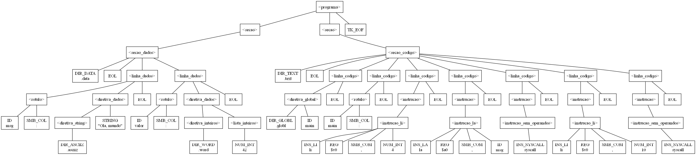

p1_arquivo_vazio.asm
Arquivo de entrada
Terminal e .sin.err
PROGRAMA SINTATICAMENTE INVÁLIDO
Linha 1, coluna 1:
Encontrado TK_EOF; esperado DIR_DATA(".data") ou DIR_TEXT(".text").O analisador sintático recebe a sequência de tokens produzida pelo analisador léxico (arquivo .lex) e verifica se ela segue a gramática do subconjunto de Assembly MIPS definida no enunciado. A técnica usada é a análise descendente recursiva: há uma função para cada não terminal da gramática, e cada função decide qual alternativa aplicar olhando apenas o próximo token. Repetições da EBNF ({ ... }) viram laços while, e partes opcionais ([ ... ]) viram decisões if sobre o token atual.
Para programas válidos, o analisador gera a árvore sintática concreta no formato DOT do Graphviz. Para programas inválidos, registra cada erro com linha, coluna, token encontrado e elemento esperado, e retoma a análise na linha seguinte.
| Arquivo | Conteúdo |
|---|---|
main.c | Valida os argumentos, abre e fecha os arquivos e chama, nesta ordem, PreProcessamento, AnaliseLexica e AnaliseSintatica. |
preprocessador.c/.h | Remove comentários, normaliza espaços e descarta linhas vazias, mantendo o mapa para a posição original. |
lexico.c/.h | AFD do analisador léxico, tabela de símbolos e erros léxicos. Expõe lexicoQtdErros() para a integração. |
sintatico.c/.h | Leitura dos tokens, funções dos não terminais, diagnóstico e recuperação de erros, e geração da árvore DOT. |
testes_sintatico/ | 29 casos de teste da etapa sintática. |
Compilação com o GCC (os arquivos .h são incluídos pelos .c):
gcc main.c preprocessador.c lexico.c sintatico.c -o main.exe
O projeto também compila sem avisos com gcc -Wall -Wextra -Wpedantic -std=c99. Execução, com dois argumentos:
./main.exe <arquivo_entrada.asm> <prefixo_saida> ./main.exe teste.asm resultado
| Arquivo gerado | Conteúdo |
|---|---|
resultado.pre | Código pré-processado |
resultado.lex | Tokens no formato <CATEGORIA, lexema> linha coluna |
resultado.ts | Tabela de símbolos (CSV) |
resultado.lex.err | Erros léxicos |
resultado.sin.err | Erros sintáticos, Nenhum erro sintático encontrado. ou o motivo da não execução |
resultado.dot | Árvore sintática concreta; vazio quando o programa é rejeitado |
Ao final, o terminal mostra PROGRAMA SINTATICAMENTE VÁLIDO ou PROGRAMA SINTATICAMENTE INVÁLIDO. Se houver erro léxico, mostra ANÁLISE SINTÁTICA NÃO EXECUTADA: EXISTEM ERROS LÉXICOS. Os códigos de encerramento são 0 (programa válido), 1 (rejeição por erros léxicos ou sintáticos) e 2 (argumentos incorretos ou falha de abertura, leitura, gravação ou memória). Para renderizar uma árvore:
dot -Tpng resultado.dot -o resultado.png
As estruturas estão declaradas em sintatico.h.
typedef struct {
char categoria[50]; /* ex.: "INS_LI", "REG", "EOL", "TK_EOF" */
char *lexema;
int linha;
int coluna;
} TokenSin;
typedef struct No {
int id; /* identificador único do nó: n0, n1, ... */
char *rotulo; /* "<programa>" ou "INS_LI\nli" */
struct No **filhos; /* vetor dinâmico, na ordem da produção */
int qtdFilhos;
int capFilhos;
} No;
typedef struct {
TokenSin *toks; /* tokens do .lex, com EOL e TK_EOF inseridos */
int qtd, cap;
int pos; /* posição do token atual */
int qtdErros;
FILE *erros; /* arquivo .sin.err */
int proximoId; /* próximo id de nó da árvore */
} Parser;
.lex, preservando categoria, lexema e posição original. O lexema é alocado dinamicamente, sem limite de tamanho.Parser *.realloc, na ordem em que são reconhecidos.INS_ADD, INS_LW…) ao seu grupo de operandos. A função instrucao() consulta essa tabela para escolher a produção.AnaliseSintatica: SIN_VALIDO (0), SIN_INVALIDO (1) e SIN_FALHA (-1), conforme o enunciado.Cada não terminal da gramática tem uma função com o mesmo nome em sintatico.c. Todas devolvem o nó da subárvore reconhecida, ou NULL quando encontram um erro.
| Não terminal | Função | Decisão pelo próximo token |
|---|---|---|
<programa> | programa() | Repete secao() até TK_EOF; exige pelo menos uma seção |
<secao> | secao() | DIR_DATA → dados; DIR_TEXT → código |
<secao_dados> | secao_dados() | Repete linha_dados() até DIR_DATA, DIR_TEXT ou TK_EOF |
<secao_codigo> | secao_codigo() | Repete linha_codigo() até DIR_DATA, DIR_TEXT ou TK_EOF |
<linha_dados> | linha_dados() | ID → rótulo; DIR_GLOBL (sem rótulo) → global; diretiva de dados → dados; exige EOL |
<linha_codigo> | linha_codigo() | ID → rótulo; DIR_GLOBL (sem rótulo) → global; INS_* → instrução; exige EOL |
<rotulo> | rotulo() | ID seguido de SMB_COL |
<diretiva_global> | diretiva_global() | DIR_GLOBL seguido de ID |
<diretiva_dados> | diretiva_dados() | .word/.half/.byte → lista; .ascii/.asciiz → STRING; .space/.align → NUM_INT |
<diretiva_inteiros> | diretiva_inteiros() | DIR_WORD, DIR_HALF ou DIR_BYTE |
<lista_inteiros> | lista_inteiros() | NUM_INT; repete enquanto houver SMB_COM |
<diretiva_string> | diretiva_string() | DIR_ASCII ou DIR_ASCIIZ |
<instrucao> | instrucao() | Grupo do mnemônico atual, pela tabela MNEMONICOS[] |
<instrucao_tres_registradores> | instrucao_tres_registradores() | <op_tres_registradores> REG , REG , REG |
<instrucao_dois_registradores> | instrucao_dois_registradores() | <op_dois_registradores> REG , REG |
<instrucao_um_registrador> | instrucao_um_registrador() | <op_um_registrador> REG |
<instrucao_imediato> | instrucao_imediato() | addi REG , REG , NUM_INT |
<instrucao_deslocamento> | instrucao_deslocamento() | <op_deslocamento> REG , REG , NUM_INT |
<instrucao_li> | instrucao_li() | li REG , NUM_INT |
<instrucao_la> | instrucao_la() | la REG , ID |
<instrucao_memoria> | instrucao_memoria() | <op_memoria> REG , <endereco> |
<instrucao_desvio> | instrucao_desvio() | <op_desvio> REG , REG , ID |
<instrucao_salto> | instrucao_salto() | <op_salto> ID |
<instrucao_sem_operandos> | instrucao_sem_operandos() | syscall ou nop |
<op_tres_registradores> | op_tres_registradores() | add addu sub subu mul and or xor nor slt |
<op_dois_registradores> | op_dois_registradores() | move div |
<op_um_registrador> | op_um_registrador() | mflo mfhi jr |
<op_deslocamento> | op_deslocamento() | sll srl |
<op_memoria> | op_memoria() | lw sw lb sb lh sh |
<op_desvio> | op_desvio() | beq bne blt ble bgt bge |
<op_salto> | op_salto() | j jal |
<endereco> | endereco() | ID, ou NUM_INT ( REG ) |
| Função | Papel |
|---|---|
carregarTokens() | Lê o .lex para a memória e insere EOL e TK_EOF (seção 5) |
atual(), verifica() | Consultam o token atual sem consumi-lo |
consumir() | Avança para o próximo token; nunca passa de TK_EOF |
esperar() | Consome o token se a categoria for a esperada e devolve a folha; senão registra o erro e devolve NULL |
erroSintatico(), sincronizar() | Registram o diagnóstico e fazem a recuperação (seção 6) |
noInterno(), noFolha(), adicionarFilho(), liberarArvore(), gravarDot() | Construção, liberação e gravação da árvore (seção 7) |
grupoDoMnemonico() | Consulta a tabela MNEMONICOS[] para a decisão de instrucao() |
O analisador léxico não gera tokens de fim de linha, e o enunciado proíbe alterar o formato do .lex. Por isso, carregarTokens() cria o marcador EOL internamente, a partir da linha de cada token:
.lex é separada em categoria, lexema, linha e coluna. A categoria vai até a primeira ", " e o lexema vai até o "> " que antecede os dois números finais. Assim, lexemas que contêm vírgula ou >, como <SMB_COM, ,> ou strings, são lidos corretamente.EOL é inserido logo depois do último token da linha atual. A coluna do EOL é a posição imediatamente posterior ao último lexema, usada nos diagnósticos de “fim de linha”.EOL extra: o pré-processador já as removeu, e o EOL só é criado depois de um token.TK_EOF, a última linha é encerrada com EOL, mesmo que o arquivo não termine com quebra de linha. Se o .lex não tiver TK_EOF, ele é acrescentado; se já tiver, não é duplicado.consumir() nunca passa de TK_EOF, então o analisador sempre termina a leitura nesse token, e programa() o inclui como última folha da árvore.Exemplo com p1_sem_quebra_final.asm, cujo último syscall não tem quebra de linha. As linhas destacadas foram inseridas pelo analisador sintático:
| Categoria | Lexema | Linha | Coluna | Origem |
|---|---|---|---|---|
DIR_TEXT | .text | 2 | 1 | lido do .lex |
EOL | | 2 | 6 | inserido pelo sintático |
ID | main | 3 | 1 | lido do .lex |
SMB_COL | : | 3 | 5 | lido do .lex |
INS_LI | li | 3 | 7 | lido do .lex |
REG | $v0 | 3 | 10 | lido do .lex |
SMB_COM | , | 3 | 13 | lido do .lex |
NUM_INT | 10 | 3 | 15 | lido do .lex |
EOL | | 3 | 17 | inserido pelo sintático |
INS_SYSCALL | syscall | 4 | 1 | lido do .lex |
EOL | | 4 | 8 | inserido pelo sintático |
TK_EOF | EOF | 5 | 1 | lido do .lex |
Todo erro passa por erroSintatico(), chamada diretamente ou por esperar(). Ela incrementa o contador de erros e grava no .sin.err a posição do token encontrado, sua categoria e lexema, e o elemento esperado:
Linha 4, coluna 9:
Encontrado REG("$t1"); esperado SMB_COM(",").
EOL (elemento ausente no fim da linha), a mensagem é Encontrado fim de linha (EOL); esperado …, na coluna seguinte ao último lexema da linha.TK_EOF, a mensagem é Encontrado TK_EOF; esperado ….REG, NUM_INT, SMB_COM(",")…) ou o nome da construção, como DIR_DATA(".data") ou DIR_TEXT(".text"), rotulo ou instrucao ou diretiva de dados ou EOL.falha() e devolve NULL. O NULL sobe até linha_dados() ou linha_codigo().sincronizar(), que descarta os tokens até o EOL da linha atual e consome esse EOL. Se o token atual já é EOL, só ele é consumido; se é TK_EOF, a recuperação para. Nenhum token de uma linha seguinte é descartado.secao_dados()/secao_codigo() só termina numa nova .data/.text ou em TK_EOF, então uma construção da seção errada vira erro, e não fim de seção, e uma nova diretiva de seção é reconhecida normalmente.AnaliseSintatica() devolve 1, o .dot fica vazio e nenhuma árvore parcial é gravada.Exemplo com teste_erros_recuperacao.asm: os erros nas linhas 3, 9 e 11 são registrados, e as construções válidas entre e depois deles continuam sendo analisadas (veja o Apêndice A).
noInterno(p, "<nome>") e anexa os filhos com adicionarFilho(), na mesma ordem dos símbolos da produção. Os filhos são anexados à medida que são reconhecidos, então a ordem da árvore é a ordem da entrada.noFolha(), com rótulo CATEGORIA\nlexema (por exemplo REG\n$t0). EOL e TK_EOF também são folhas, rotuladas só com a categoria.<lista_inteiros>). Partes opcionais ausentes, como uma linha sem rótulo, não geram nós.proximoId), gravado como n0, n1…gravarDot() escreve primeiro todos os nós e depois todas as arestas, com graph [ordering=out] para o Graphviz respeitar a ordem dos filhos. Aspas e barras invertidas nos rótulos são escapadas (\" e \\), e a quebra entre categoria e lexema vira \n. O teste teste_escape_dot.asm verifica isso com strings que contêm aspas e barras.liberarArvore().Trecho do formato gerado:
digraph ArvoreSintatica {
graph [ordering=out];
node [shape=box];
edge [arrowhead=none];
n0 [label="<programa>"];
n1 [label="<secao>"];
...
n0 -> n1;
...
}
main() executa as três etapas em ordem, sempre recriando os arquivos de saída para não sobrar resultado de uma execução anterior. O .pre e o .lex são reabertos para leitura, então cada etapa lê sua entrada desde o início.int lexicoQtdErros(void), que devolve a quantidade de erros léxicos da última análise. Se ela for maior que zero, main() não chama o sintático, mostra ANÁLISE SINTÁTICA NÃO EXECUTADA: EXISTEM ERROS LÉXICOS., grava o mesmo motivo no .sin.err, deixa o .dot vazio e encerra com código 1.AnaliseSintatica(FILE *tokens, FILE *arvore, FILE *erros) usa só os arquivos recebidos por parâmetro. A abertura e o fechamento ficam com main().Foram usados 29 programas em testes_sintatico/: 11 sintaticamente válidos e 18 rejeitados. Todos os casos de erro sintático são lexicamente válidos. A tabela mostra onde cada item da seção 8 do enunciado é coberto.
| Categoria | Caso exigido | Testes |
|---|---|---|
| Organização | Programa iniciado por .text; .data e .text; alternância e seção vazia | p2_valido_direto_text, p2_valido_data_text, p2_valido_alternancia_secao_vazia |
| Rótulos | Rótulo isolado; rótulo seguido de instrução ou diretiva | p2_valido_rotulos, p3_valido_rotulo_e_instrucao |
| Diretivas | Todas as diretivas da gramática | p2_valido_todas_diretivas |
| Instruções | Todos os grupos e todas as 36 operações | p3_valido_todas_instrucoes |
| Operandos | Decimais, hexadecimais, strings, listas e identificadores | p3_valido_numeros_e_enderecos, p2_valido_todas_diretivas |
| Memória | Endereço por identificador e por deslocamento(registrador) | p3_valido_numeros_e_enderecos, p3_valido_todas_instrucoes |
| Linhas | Linhas vazias, comentários, arquivo sem quebra final | p1_linhas_vazias_comentarios, p1_sem_quebra_final |
| Entrada inválida | Arquivo vazio; programa sem abertura de seção | p1_arquivo_vazio, p1_so_comentarios, p1_sem_secao, p2_erro_token_antes_secao |
| Seção incorreta | Instrução em .data; diretiva de dados em .text | p2_erro_instrucao_em_data, p2_erro_diretiva_em_text |
| Estrutura incorreta | Operandos ausentes, excedentes, fora de ordem ou de categoria errada | p3_erro_faltam_operandos, p3_erro_operando_excedente, p3_erro_fora_de_ordem, p3_erro_categoria_errada, p2_erro_operandos_diretivas |
| Pontuação | Vírgula, dois-pontos ou parênteses ausentes; lista terminada em vírgula | p3_erro_virgula_ausente, p3_erro_endereco, p2_erro_rotulo_sem_dois_pontos, p2_erro_word_virgula_final |
| Consumo completo | Tokens adicionais após uma construção completa | p2_erro_token_sobrando, p3_erro_operando_excedente |
| Recuperação | Erros em linhas distintas, com reconhecimento das construções seguintes | teste_erros_recuperacao e todos os testes com mais de um erro |
| Limites da etapa | Rótulo inexistente e rótulo duplicado, sem rejeição | p3_valido_rotulo_e_instrucao, teste_escape_dot |
| Integração | Erro léxico impede a análise sintática | p1_erro_lexico |
| Saída DOT | Escape de aspas e barras invertidas nos rótulos | teste_escape_dot |
Resultados obtidos executando ./main.exe sobre cada arquivo. “Erros” é a quantidade de diagnósticos no .sin.err. O conteúdo completo de cada teste e dos diagnósticos está no Apêndice A.
| Teste | Esperado | Obtido | |
|---|---|---|---|
p1_arquivo_vazio |
Inválido, 1 erro(s); saída 1 | Inválido, 1 erro(s); saída 1 | confere |
p1_erro_lexicoErro lexico: a analise sintatica nao deve ser executada |
Não executa o sintático (erro léxico); saída 1 | Não executou o sintático; saída 1 | confere |
p1_linhas_vazias_comentariosLinhas vazias e comentarios nao geram EOL extra |
Válido; saída 0 | Válido; saída 0 | confere |
p1_sem_quebra_finalArquivo sem quebra de linha final |
Válido; saída 0 | Válido; saída 0 | confere |
p1_sem_secaoPrograma sem abertura de secao |
Inválido, 1 erro(s); saída 1 | Inválido, 1 erro(s); saída 1 | confere |
p1_so_comentariosArquivo composto somente por comentarios |
Inválido, 1 erro(s); saída 1 | Inválido, 1 erro(s); saída 1 | confere |
p2_erro_diretiva_em_textDiretiva de dados dentro de .text (erro na linha 4); o nop seguinte continua valido |
Inválido, 1 erro(s); saída 1 | Inválido, 1 erro(s); saída 1 | confere |
p2_erro_instrucao_em_dataInstrucao dentro de .data (erro na linha 4); a secao .text depois continua valida |
Inválido, 1 erro(s); saída 1 | Inválido, 1 erro(s); saída 1 | confere |
p2_erro_operandos_diretivasOperando que falta ou de categoria errada em diretivas, 4 linhas diferentes (3 a 6) |
Inválido, 4 erro(s); saída 1 | Inválido, 4 erro(s); saída 1 | confere |
p2_erro_rotulo_sem_dois_pontosRotulo sem dois-pontos em .data (erro na linha 3) e em .text (erro na linha 5) |
Inválido, 2 erro(s); saída 1 | Inválido, 2 erro(s); saída 1 | confere |
p2_erro_token_antes_secaoToken antes de qualquer secao (erro na linha 2); a .text depois e reconhecida |
Inválido, 1 erro(s); saída 1 | Inválido, 1 erro(s); saída 1 | confere |
p2_erro_token_sobrandoToken sobrando depois de construcao completa, em 3 linhas diferentes (2, 3 e 5) |
Inválido, 3 erro(s); saída 1 | Inválido, 3 erro(s); saída 1 | confere |
p2_erro_word_virgula_final.word com lista terminada em virgula (erro na linha 3) |
Inválido, 1 erro(s); saída 1 | Inválido, 1 erro(s); saída 1 | confere |
p2_valido_alternancia_secao_vaziaAlternancia entre secoes e secoes vazias |
Válido; saída 0 | Válido; saída 0 | confere |
p2_valido_data_textSecao .data seguida de .text |
Válido; saída 0 | Válido; saída 0 | confere |
p2_valido_direto_textPrograma que comeca direto em .text (sem secao .data) |
Válido; saída 0 | Válido; saída 0 | confere |
p2_valido_rotulosRotulo isolado, rotulo + diretiva, rotulo + instrucao, .globl nas duas secoes |
Válido; saída 0 | Válido; saída 0 | confere |
p2_valido_todas_diretivasAs 10 diretivas: .data .text .globl .word .half .byte .ascii .asciiz .space .align |
Válido; saída 0 | Válido; saída 0 | confere |
p3_erro_categoria_erradaOperandos de categoria inadequada: 5 erros, um por linha |
Inválido, 5 erro(s); saída 1 | Inválido, 5 erro(s); saída 1 | confere |
p3_erro_enderecoEnderecos mal formados: 4 erros, um por linha |
Inválido, 4 erro(s); saída 1 | Inválido, 4 erro(s); saída 1 | confere |
p3_erro_faltam_operandosOperandos ausentes: 3 erros, um por linha |
Inválido, 3 erro(s); saída 1 | Inválido, 3 erro(s); saída 1 | confere |
p3_erro_fora_de_ordemOperandos fora de ordem: 3 erros, um por linha |
Inválido, 3 erro(s); saída 1 | Inválido, 3 erro(s); saída 1 | confere |
p3_erro_operando_excedenteOperandos excedentes: 3 erros, um por linha |
Inválido, 3 erro(s); saída 1 | Inválido, 3 erro(s); saída 1 | confere |
p3_erro_virgula_ausenteVirgulas ausentes entre operandos: 3 erros, um por linha |
Inválido, 3 erro(s); saída 1 | Inválido, 3 erro(s); saída 1 | confere |
p3_valido_numeros_e_enderecosInteiros decimais, negativos e hexadecimais; enderecos por identificador |
Válido; saída 0 | Válido; saída 0 | confere |
p3_valido_rotulo_e_instrucaoRotulo seguido de instrucao na mesma linha, rotulo isolado, |
Válido; saída 0 | Válido; saída 0 | confere |
p3_valido_todas_instrucoesTodas as operacoes de todos os grupos de instrucoes da gramatica |
Válido; saída 0 | Válido; saída 0 | confere |
teste_erros_recuperacao |
Inválido, 3 erro(s); saída 1 | Inválido, 3 erro(s); saída 1 | confere |
teste_escape_dot |
Válido; saída 0 | Válido; saída 0 | confere |
Árvore sintática concreta completa de testes_sintatico/p2_valido_data_text.asm (73 nós), renderizada pelo Graphviz com dot -Tpng arvore.dot -o arvore.png:
.data
msg: .asciiz "Ola, mundo"
valor: .word 42
.text
.globl main
main:
li $v0, 4
la $a0, msg
syscall
li $v0, 10
syscall

Para cada teste: o arquivo de entrada, a mensagem mostrada no terminal e o conteúdo do .sin.err.
p1_arquivo_vazio.asmPROGRAMA SINTATICAMENTE INVÁLIDO
Linha 1, coluna 1:
Encontrado TK_EOF; esperado DIR_DATA(".data") ou DIR_TEXT(".text").p1_erro_lexico.asmErro lexico: a analise sintatica nao deve ser executada
# Erro lexico: a analise sintatica nao deve ser executada .text main: li $t0, 10 add $t1, $t0, @
ANÁLISE SINTÁTICA NÃO EXECUTADA: EXISTEM ERROS LÉXICOS. ANÁLISE SINTÁTICA NÃO EXECUTADA: EXISTEM ERROS LÉXICOS.
p1_linhas_vazias_comentarios.asmLinhas vazias e comentarios nao geram EOL extra
# Linhas vazias e comentarios nao geram EOL extra
.data
# comentario isolado
msg: .asciiz "a, b> 1 2" # string com virgula e >
.text
main: li $v0, 10 # comentario no fim
syscallPROGRAMA SINTATICAMENTE VÁLIDO Nenhum erro sintático encontrado.
p1_sem_quebra_final.asmArquivo sem quebra de linha final
# Arquivo sem quebra de linha final .text main: li $v0, 10 syscall
PROGRAMA SINTATICAMENTE VÁLIDO Nenhum erro sintático encontrado.
p1_sem_secao.asmPrograma sem abertura de secao
# Programa sem abertura de secao main: li $t0, 10 .text syscall
PROGRAMA SINTATICAMENTE INVÁLIDO
Linha 2, coluna 1:
Encontrado ID("main"); esperado DIR_DATA(".data") ou DIR_TEXT(".text").p1_so_comentarios.asmArquivo composto somente por comentarios
# Arquivo composto somente por comentarios # deve ser rejeitado: nao ha secao
PROGRAMA SINTATICAMENTE INVÁLIDO
Linha 4, coluna 1:
Encontrado TK_EOF; esperado DIR_DATA(".data") ou DIR_TEXT(".text").p2_erro_diretiva_em_text.asmDiretiva de dados dentro de .text (erro na linha 4); o nop seguinte continua valido
# Diretiva de dados dentro de .text (erro na linha 4); o nop seguinte continua valido
.text
main: nop
.word 5
nopPROGRAMA SINTATICAMENTE INVÁLIDO
Linha 4, coluna 9:
Encontrado DIR_WORD(".word"); esperado rotulo ou instrucao.p2_erro_instrucao_em_data.asmInstrucao dentro de .data (erro na linha 4); a secao .text depois continua valida
# Instrucao dentro de .data (erro na linha 4); a secao .text depois continua valida
.data
msg: .asciiz "ok"
add $t0, $t1, $t2
.text
main: nopPROGRAMA SINTATICAMENTE INVÁLIDO
Linha 4, coluna 9:
Encontrado INS_ADD("add"); esperado rotulo ou diretiva de dados.p2_erro_operandos_diretivas.asmOperando que falta ou de categoria errada em diretivas, 4 linhas diferentes (3 a 6)
# Operando que falta ou de categoria errada em diretivas, 4 linhas diferentes (3 a 6) .data a: .asciiz 5 b: .space c: .word .globl d: .half 1 .text main: nop
PROGRAMA SINTATICAMENTE INVÁLIDO
Linha 3, coluna 12:
Encontrado NUM_INT("5"); esperado STRING.
Linha 4, coluna 10:
Encontrado fim de linha (EOL); esperado NUM_INT.
Linha 5, coluna 9:
Encontrado fim de linha (EOL); esperado NUM_INT.
Linha 6, coluna 7:
Encontrado fim de linha (EOL); esperado ID.p2_erro_rotulo_sem_dois_pontos.asmRotulo sem dois-pontos em .data (erro na linha 3) e em .text (erro na linha 5)
# Rotulo sem dois-pontos em .data (erro na linha 3) e em .text (erro na linha 5) .data valor .word 5 .text main nop
PROGRAMA SINTATICAMENTE INVÁLIDO
Linha 3, coluna 7:
Encontrado DIR_WORD(".word"); esperado SMB_COL(":").
Linha 5, coluna 6:
Encontrado INS_NOP("nop"); esperado SMB_COL(":").p2_erro_token_antes_secao.asmToken antes de qualquer secao (erro na linha 2); a .text depois e reconhecida
# Token antes de qualquer secao (erro na linha 2); a .text depois e reconhecida meuRotulo: .word 1 .text main: nop
PROGRAMA SINTATICAMENTE INVÁLIDO
Linha 2, coluna 1:
Encontrado ID("meuRotulo"); esperado DIR_DATA(".data") ou DIR_TEXT(".text").p2_erro_token_sobrando.asmToken sobrando depois de construcao completa, em 3 linhas diferentes (2, 3 e 5)
# Token sobrando depois de construcao completa, em 3 linhas diferentes (2, 3 e 5) .data extra valor: .word 1 2 .text .globl main extra main: nop
PROGRAMA SINTATICAMENTE INVÁLIDO
Linha 2, coluna 7:
Encontrado ID("extra"); esperado EOL.
Linha 3, coluna 16:
Encontrado NUM_INT("2"); esperado EOL.
Linha 5, coluna 13:
Encontrado ID("extra"); esperado EOL.p2_erro_word_virgula_final.asm.word com lista terminada em virgula (erro na linha 3)
# .word com lista terminada em virgula (erro na linha 3) .data numeros: .word 10, .text main: nop
PROGRAMA SINTATICAMENTE INVÁLIDO Linha 3, coluna 19: Encontrado fim de linha (EOL); esperado NUM_INT.
p2_valido_alternancia_secao_vazia.asmAlternancia entre secoes e secoes vazias
# Alternancia entre secoes e secoes vazias
.data
.text
main:
nop
.data
x: .word 1
.text
.dataPROGRAMA SINTATICAMENTE VÁLIDO Nenhum erro sintático encontrado.
p2_valido_data_text.asmSecao .data seguida de .text
# Secao .data seguida de .text
.data
msg: .asciiz "Ola, mundo"
valor: .word 42
.text
.globl main
main:
li $v0, 4
la $a0, msg
syscall
li $v0, 10
syscallPROGRAMA SINTATICAMENTE VÁLIDO Nenhum erro sintático encontrado.
p2_valido_direto_text.asmPrograma que comeca direto em .text (sem secao .data)
# Programa que comeca direto em .text (sem secao .data)
.text
.globl main
main:
li $v0, 10
syscallPROGRAMA SINTATICAMENTE VÁLIDO Nenhum erro sintático encontrado.
p2_valido_rotulos.asmRotulo isolado, rotulo + diretiva, rotulo + instrucao, .globl nas duas secoes
# Rotulo isolado, rotulo + diretiva, rotulo + instrucao, .globl nas duas secoes
.data
inicio:
dado: .word 10
.globl dado
.text
.globl principal
principal:
laco: addi $t0, $t0, 1
j laco
fim:
syscallPROGRAMA SINTATICAMENTE VÁLIDO Nenhum erro sintático encontrado.
p2_valido_todas_diretivas.asmAs 10 diretivas: .data .text .globl .word .half .byte .ascii .asciiz .space .align
# As 10 diretivas: .data .text .globl .word .half .byte .ascii .asciiz .space .align
.data
.globl numeros
numeros: .word 1, 0x2A, -3
metade: .half 4, 5
bytes: .byte 7, 0x0F
texto: .ascii "sem terminador"
frase: .asciiz "aspas \" e barra \\ ok"
.space 16
.align 2
.text
.globl main
main:PROGRAMA SINTATICAMENTE VÁLIDO Nenhum erro sintático encontrado.
p3_erro_categoria_errada.asmOperandos de categoria inadequada: 5 erros, um por linha
# Operandos de categoria inadequada: 5 erros, um por linha
.data
mensagem: .asciiz "texto"
.text
li $t0, mensagem
la $t0, 10
j 100
beq $t0, $t1, 5
addi $t0, $t1, $t2
nopPROGRAMA SINTATICAMENTE INVÁLIDO
Linha 6, coluna 13:
Encontrado ID("mensagem"); esperado NUM_INT.
Linha 7, coluna 13:
Encontrado NUM_INT("10"); esperado ID.
Linha 8, coluna 7:
Encontrado NUM_INT("100"); esperado ID.
Linha 9, coluna 19:
Encontrado NUM_INT("5"); esperado ID.
Linha 10, coluna 20:
Encontrado REG("$t2"); esperado NUM_INT.p3_erro_endereco.asmEnderecos mal formados: 4 erros, um por linha
# Enderecos mal formados: 4 erros, um por linha
.text
lw $t0, 4 $sp
sw $t0, 4($sp
lb $t0, ($sp)
sh $t0, 4(10)
lw $t0, 4($sp)PROGRAMA SINTATICAMENTE INVÁLIDO
Linha 3, coluna 15:
Encontrado REG("$sp"); esperado SMB_OPA("(").
Linha 4, coluna 18:
Encontrado fim de linha (EOL); esperado SMB_CPA(")").
Linha 5, coluna 13:
Encontrado SMB_OPA("("); esperado ID ou NUM_INT.
Linha 6, coluna 15:
Encontrado NUM_INT("10"); esperado REG.p3_erro_faltam_operandos.asmOperandos ausentes: 3 erros, um por linha
# Operandos ausentes: 3 erros, um por linha
.text
add $t0, $t1
li $t0
j
nopPROGRAMA SINTATICAMENTE INVÁLIDO
Linha 3, coluna 17:
Encontrado fim de linha (EOL); esperado SMB_COM(",").
Linha 4, coluna 11:
Encontrado fim de linha (EOL); esperado SMB_COM(",").
Linha 5, coluna 6:
Encontrado fim de linha (EOL); esperado ID.p3_erro_fora_de_ordem.asmOperandos fora de ordem: 3 erros, um por linha
# Operandos fora de ordem: 3 erros, um por linha
.text
li 10, $t0
sll $t0, 2, $t1
beq fim, $t0, $t1
fim:
syscallPROGRAMA SINTATICAMENTE INVÁLIDO
Linha 3, coluna 8:
Encontrado NUM_INT("10"); esperado REG.
Linha 4, coluna 14:
Encontrado NUM_INT("2"); esperado REG.
Linha 5, coluna 9:
Encontrado ID("fim"); esperado REG.p3_erro_operando_excedente.asmOperandos excedentes: 3 erros, um por linha
# Operandos excedentes: 3 erros, um por linha
.text
syscall $t0
jr $ra, $t0
add $t0, $t1, $t2, $t3
nopPROGRAMA SINTATICAMENTE INVÁLIDO
Linha 3, coluna 13:
Encontrado REG("$t0"); esperado EOL.
Linha 4, coluna 11:
Encontrado SMB_COM(","); esperado EOL.
Linha 5, coluna 22:
Encontrado SMB_COM(","); esperado EOL.p3_erro_virgula_ausente.asmVirgulas ausentes entre operandos: 3 erros, um por linha
# Virgulas ausentes entre operandos: 3 erros, um por linha
.text
add $t0 $t1, $t2
lw $t0 4($sp)
beq $t0, $t1 fim
fim:
syscallPROGRAMA SINTATICAMENTE INVÁLIDO
Linha 3, coluna 13:
Encontrado REG("$t1"); esperado SMB_COM(",").
Linha 4, coluna 12:
Encontrado NUM_INT("4"); esperado SMB_COM(",").
Linha 5, coluna 18:
Encontrado ID("fim"); esperado SMB_COM(",").p3_valido_numeros_e_enderecos.asmInteiros decimais, negativos e hexadecimais; enderecos por identificador
# Inteiros decimais, negativos e hexadecimais; enderecos por identificador
# e por deslocamento(registrador); registradores na forma numerica
.data
vetor: .word 10, -20, 0xFF, -0x10
.text
li $t0, 0
li $t1, 2025
li $t2, -32768
li $t3, 0x10010000
li $t4, -0x10
addi $t5, $t5, -1
addi $t6, $t6, 0xFF
sll $t7, $t7, 0
lw $t0, vetor
sw $t0, vetor
lw $t1, 0($sp)
lw $t1, -4($fp)
sw $t2, 0x10($gp)
lb $8, 3($29)
la $a0, vetor
add $0, $31, $16PROGRAMA SINTATICAMENTE VÁLIDO Nenhum erro sintático encontrado.
p3_valido_rotulo_e_instrucao.asmRotulo seguido de instrucao na mesma linha, rotulo isolado,
# Rotulo seguido de instrucao na mesma linha, rotulo isolado,
# referencia antecipada, rotulo inexistente e rotulo duplicado
# (os dois ultimos sao questoes semanticas e nao devem rejeitar o programa)
.text
inicio: li $t0, 10
loop: addi $t0, $t0, -1
bne $t0, $zero, loop
beq $t0, $zero, depois
j rotulo_que_nao_existe
depois:
jal funcao
funcao: jr $ra
loop: nop
fim: syscallPROGRAMA SINTATICAMENTE VÁLIDO Nenhum erro sintático encontrado.
p3_valido_todas_instrucoes.asmTodas as operacoes de todos os grupos de instrucoes da gramatica
# Todas as operacoes de todos os grupos de instrucoes da gramatica
.data
numero: .word 10
msg: .asciiz "ok"
.text
main:
# tres registradores
add $t0, $t1, $t2
addu $t0, $t1, $t2
sub $t0, $t1, $t2
subu $t0, $t1, $t2
mul $t0, $t1, $t2
and $t0, $t1, $t2
or $t0, $t1, $t2
xor $t0, $t1, $t2
nor $t0, $t1, $t2
slt $t0, $t1, $t2
# dois registradores
move $t0, $t1
div $t0, $t1
# um registrador
mflo $t0
mfhi $t1
jr $ra
# imediato
addi $t0, $t1, 5
# deslocamento de bits
sll $t0, $t1, 2
srl $t0, $t1, 2
# carregamento de valor e endereco
li $v0, 4
la $a0, msg
# acesso a memoria
lw $t0, numero
sw $t0, 0($sp)
lb $t0, 1($sp)
sb $t0, 2($sp)
lh $t0, 4($sp)
sh $t0, 6($sp)
# desvios condicionais
beq $t0, $t1, fim
bne $t0, $t1, fim
blt $t0, $t1, fim
ble $t0, $t1, fim
bgt $t0, $t1, fim
bge $t0, $t1, fim
# saltos
j fim
jal fim
# sem operandos
nop
fim:
syscallPROGRAMA SINTATICAMENTE VÁLIDO Nenhum erro sintático encontrado.
teste_erros_recuperacao.asm.data
valido1: .word 10, 20
erro1: .word 10,
valido2: .asciiz "Linha recuperada com sucesso"
.text
main:
add $t0, $t1, $t2
add $t0 $t1, $t2
sub $t3, $t4, $t5
lw $t0, 4 $sp
li $t1, 100
syscallPROGRAMA SINTATICAMENTE INVÁLIDO
Linha 3, coluna 21:
Encontrado fim de linha (EOL); esperado NUM_INT.
Linha 9, coluna 13:
Encontrado REG("$t1"); esperado SMB_COM(",").
Linha 11, coluna 15:
Encontrado REG("$sp"); esperado SMB_OPA("(").teste_escape_dot.asm.data
msg_aspas: .asciiz "Texto com \"aspas\" internas"
msg_barra: .asciiz "C:\\pasta\\arquivo.asm"
.text
inicio:
la $a0, msg_aspas
li $v0, 4
syscall
inicio:
j rotulo_inexistentePROGRAMA SINTATICAMENTE VÁLIDO Nenhum erro sintático encontrado.
Conteúdo do .dot gerado para cada um dos 11 programas válidos.
p1_linhas_vazias_comentarios.dotdigraph ArvoreSintatica {
graph [ordering=out];
node [shape=box];
edge [arrowhead=none];
n0 [label="<programa>"];
n1 [label="<secao>"];
n2 [label="<secao_dados>"];
n3 [label="DIR_DATA\n.data"];
n4 [label="EOL"];
n5 [label="<linha_dados>"];
n6 [label="<rotulo>"];
n7 [label="ID\nmsg"];
n8 [label="SMB_COL\n:"];
n9 [label="<diretiva_dados>"];
n10 [label="<diretiva_string>"];
n11 [label="DIR_ASCIIZ\n.asciiz"];
n12 [label="STRING\n\"a, b> 1 2\""];
n13 [label="EOL"];
n14 [label="<secao>"];
n15 [label="<secao_codigo>"];
n16 [label="DIR_TEXT\n.text"];
n17 [label="EOL"];
n18 [label="<linha_codigo>"];
n19 [label="<rotulo>"];
n20 [label="ID\nmain"];
n21 [label="SMB_COL\n:"];
n22 [label="<instrucao>"];
n23 [label="<instrucao_li>"];
n24 [label="INS_LI\nli"];
n25 [label="REG\n$v0"];
n26 [label="SMB_COM\n,"];
n27 [label="NUM_INT\n10"];
n28 [label="EOL"];
n29 [label="<linha_codigo>"];
n30 [label="<instrucao>"];
n31 [label="<instrucao_sem_operandos>"];
n32 [label="INS_SYSCALL\nsyscall"];
n33 [label="EOL"];
n34 [label="TK_EOF"];
n0 -> n1;
n1 -> n2;
n2 -> n3;
n2 -> n4;
n2 -> n5;
n5 -> n6;
n6 -> n7;
n6 -> n8;
n5 -> n9;
n9 -> n10;
n10 -> n11;
n9 -> n12;
n5 -> n13;
n0 -> n14;
n14 -> n15;
n15 -> n16;
n15 -> n17;
n15 -> n18;
n18 -> n19;
n19 -> n20;
n19 -> n21;
n18 -> n22;
n22 -> n23;
n23 -> n24;
n23 -> n25;
n23 -> n26;
n23 -> n27;
n18 -> n28;
n15 -> n29;
n29 -> n30;
n30 -> n31;
n31 -> n32;
n29 -> n33;
n0 -> n34;
}
p1_sem_quebra_final.dotdigraph ArvoreSintatica {
graph [ordering=out];
node [shape=box];
edge [arrowhead=none];
n0 [label="<programa>"];
n1 [label="<secao>"];
n2 [label="<secao_codigo>"];
n3 [label="DIR_TEXT\n.text"];
n4 [label="EOL"];
n5 [label="<linha_codigo>"];
n6 [label="<rotulo>"];
n7 [label="ID\nmain"];
n8 [label="SMB_COL\n:"];
n9 [label="<instrucao>"];
n10 [label="<instrucao_li>"];
n11 [label="INS_LI\nli"];
n12 [label="REG\n$v0"];
n13 [label="SMB_COM\n,"];
n14 [label="NUM_INT\n10"];
n15 [label="EOL"];
n16 [label="<linha_codigo>"];
n17 [label="<instrucao>"];
n18 [label="<instrucao_sem_operandos>"];
n19 [label="INS_SYSCALL\nsyscall"];
n20 [label="EOL"];
n21 [label="TK_EOF"];
n0 -> n1;
n1 -> n2;
n2 -> n3;
n2 -> n4;
n2 -> n5;
n5 -> n6;
n6 -> n7;
n6 -> n8;
n5 -> n9;
n9 -> n10;
n10 -> n11;
n10 -> n12;
n10 -> n13;
n10 -> n14;
n5 -> n15;
n2 -> n16;
n16 -> n17;
n17 -> n18;
n18 -> n19;
n16 -> n20;
n0 -> n21;
}
p2_valido_alternancia_secao_vazia.dotdigraph ArvoreSintatica {
graph [ordering=out];
node [shape=box];
edge [arrowhead=none];
n0 [label="<programa>"];
n1 [label="<secao>"];
n2 [label="<secao_dados>"];
n3 [label="DIR_DATA\n.data"];
n4 [label="EOL"];
n5 [label="<secao>"];
n6 [label="<secao_codigo>"];
n7 [label="DIR_TEXT\n.text"];
n8 [label="EOL"];
n9 [label="<linha_codigo>"];
n10 [label="<rotulo>"];
n11 [label="ID\nmain"];
n12 [label="SMB_COL\n:"];
n13 [label="EOL"];
n14 [label="<linha_codigo>"];
n15 [label="<instrucao>"];
n16 [label="<instrucao_sem_operandos>"];
n17 [label="INS_NOP\nnop"];
n18 [label="EOL"];
n19 [label="<secao>"];
n20 [label="<secao_dados>"];
n21 [label="DIR_DATA\n.data"];
n22 [label="EOL"];
n23 [label="<linha_dados>"];
n24 [label="<rotulo>"];
n25 [label="ID\nx"];
n26 [label="SMB_COL\n:"];
n27 [label="<diretiva_dados>"];
n28 [label="<diretiva_inteiros>"];
n29 [label="DIR_WORD\n.word"];
n30 [label="<lista_inteiros>"];
n31 [label="NUM_INT\n1"];
n32 [label="EOL"];
n33 [label="<secao>"];
n34 [label="<secao_codigo>"];
n35 [label="DIR_TEXT\n.text"];
n36 [label="EOL"];
n37 [label="<secao>"];
n38 [label="<secao_dados>"];
n39 [label="DIR_DATA\n.data"];
n40 [label="EOL"];
n41 [label="TK_EOF"];
n0 -> n1;
n1 -> n2;
n2 -> n3;
n2 -> n4;
n0 -> n5;
n5 -> n6;
n6 -> n7;
n6 -> n8;
n6 -> n9;
n9 -> n10;
n10 -> n11;
n10 -> n12;
n9 -> n13;
n6 -> n14;
n14 -> n15;
n15 -> n16;
n16 -> n17;
n14 -> n18;
n0 -> n19;
n19 -> n20;
n20 -> n21;
n20 -> n22;
n20 -> n23;
n23 -> n24;
n24 -> n25;
n24 -> n26;
n23 -> n27;
n27 -> n28;
n28 -> n29;
n27 -> n30;
n30 -> n31;
n23 -> n32;
n0 -> n33;
n33 -> n34;
n34 -> n35;
n34 -> n36;
n0 -> n37;
n37 -> n38;
n38 -> n39;
n38 -> n40;
n0 -> n41;
}
p2_valido_data_text.dotdigraph ArvoreSintatica {
graph [ordering=out];
node [shape=box];
edge [arrowhead=none];
n0 [label="<programa>"];
n1 [label="<secao>"];
n2 [label="<secao_dados>"];
n3 [label="DIR_DATA\n.data"];
n4 [label="EOL"];
n5 [label="<linha_dados>"];
n6 [label="<rotulo>"];
n7 [label="ID\nmsg"];
n8 [label="SMB_COL\n:"];
n9 [label="<diretiva_dados>"];
n10 [label="<diretiva_string>"];
n11 [label="DIR_ASCIIZ\n.asciiz"];
n12 [label="STRING\n\"Ola, mundo\""];
n13 [label="EOL"];
n14 [label="<linha_dados>"];
n15 [label="<rotulo>"];
n16 [label="ID\nvalor"];
n17 [label="SMB_COL\n:"];
n18 [label="<diretiva_dados>"];
n19 [label="<diretiva_inteiros>"];
n20 [label="DIR_WORD\n.word"];
n21 [label="<lista_inteiros>"];
n22 [label="NUM_INT\n42"];
n23 [label="EOL"];
n24 [label="<secao>"];
n25 [label="<secao_codigo>"];
n26 [label="DIR_TEXT\n.text"];
n27 [label="EOL"];
n28 [label="<linha_codigo>"];
n29 [label="<diretiva_global>"];
n30 [label="DIR_GLOBL\n.globl"];
n31 [label="ID\nmain"];
n32 [label="EOL"];
n33 [label="<linha_codigo>"];
n34 [label="<rotulo>"];
n35 [label="ID\nmain"];
n36 [label="SMB_COL\n:"];
n37 [label="EOL"];
n38 [label="<linha_codigo>"];
n39 [label="<instrucao>"];
n40 [label="<instrucao_li>"];
n41 [label="INS_LI\nli"];
n42 [label="REG\n$v0"];
n43 [label="SMB_COM\n,"];
n44 [label="NUM_INT\n4"];
n45 [label="EOL"];
n46 [label="<linha_codigo>"];
n47 [label="<instrucao>"];
n48 [label="<instrucao_la>"];
n49 [label="INS_LA\nla"];
n50 [label="REG\n$a0"];
n51 [label="SMB_COM\n,"];
n52 [label="ID\nmsg"];
n53 [label="EOL"];
n54 [label="<linha_codigo>"];
n55 [label="<instrucao>"];
n56 [label="<instrucao_sem_operandos>"];
n57 [label="INS_SYSCALL\nsyscall"];
n58 [label="EOL"];
n59 [label="<linha_codigo>"];
n60 [label="<instrucao>"];
n61 [label="<instrucao_li>"];
n62 [label="INS_LI\nli"];
n63 [label="REG\n$v0"];
n64 [label="SMB_COM\n,"];
n65 [label="NUM_INT\n10"];
n66 [label="EOL"];
n67 [label="<linha_codigo>"];
n68 [label="<instrucao>"];
n69 [label="<instrucao_sem_operandos>"];
n70 [label="INS_SYSCALL\nsyscall"];
n71 [label="EOL"];
n72 [label="TK_EOF"];
n0 -> n1;
n1 -> n2;
n2 -> n3;
n2 -> n4;
n2 -> n5;
n5 -> n6;
n6 -> n7;
n6 -> n8;
n5 -> n9;
n9 -> n10;
n10 -> n11;
n9 -> n12;
n5 -> n13;
n2 -> n14;
n14 -> n15;
n15 -> n16;
n15 -> n17;
n14 -> n18;
n18 -> n19;
n19 -> n20;
n18 -> n21;
n21 -> n22;
n14 -> n23;
n0 -> n24;
n24 -> n25;
n25 -> n26;
n25 -> n27;
n25 -> n28;
n28 -> n29;
n29 -> n30;
n29 -> n31;
n28 -> n32;
n25 -> n33;
n33 -> n34;
n34 -> n35;
n34 -> n36;
n33 -> n37;
n25 -> n38;
n38 -> n39;
n39 -> n40;
n40 -> n41;
n40 -> n42;
n40 -> n43;
n40 -> n44;
n38 -> n45;
n25 -> n46;
n46 -> n47;
n47 -> n48;
n48 -> n49;
n48 -> n50;
n48 -> n51;
n48 -> n52;
n46 -> n53;
n25 -> n54;
n54 -> n55;
n55 -> n56;
n56 -> n57;
n54 -> n58;
n25 -> n59;
n59 -> n60;
n60 -> n61;
n61 -> n62;
n61 -> n63;
n61 -> n64;
n61 -> n65;
n59 -> n66;
n25 -> n67;
n67 -> n68;
n68 -> n69;
n69 -> n70;
n67 -> n71;
n0 -> n72;
}
p2_valido_direto_text.dotdigraph ArvoreSintatica {
graph [ordering=out];
node [shape=box];
edge [arrowhead=none];
n0 [label="<programa>"];
n1 [label="<secao>"];
n2 [label="<secao_codigo>"];
n3 [label="DIR_TEXT\n.text"];
n4 [label="EOL"];
n5 [label="<linha_codigo>"];
n6 [label="<diretiva_global>"];
n7 [label="DIR_GLOBL\n.globl"];
n8 [label="ID\nmain"];
n9 [label="EOL"];
n10 [label="<linha_codigo>"];
n11 [label="<rotulo>"];
n12 [label="ID\nmain"];
n13 [label="SMB_COL\n:"];
n14 [label="EOL"];
n15 [label="<linha_codigo>"];
n16 [label="<instrucao>"];
n17 [label="<instrucao_li>"];
n18 [label="INS_LI\nli"];
n19 [label="REG\n$v0"];
n20 [label="SMB_COM\n,"];
n21 [label="NUM_INT\n10"];
n22 [label="EOL"];
n23 [label="<linha_codigo>"];
n24 [label="<instrucao>"];
n25 [label="<instrucao_sem_operandos>"];
n26 [label="INS_SYSCALL\nsyscall"];
n27 [label="EOL"];
n28 [label="TK_EOF"];
n0 -> n1;
n1 -> n2;
n2 -> n3;
n2 -> n4;
n2 -> n5;
n5 -> n6;
n6 -> n7;
n6 -> n8;
n5 -> n9;
n2 -> n10;
n10 -> n11;
n11 -> n12;
n11 -> n13;
n10 -> n14;
n2 -> n15;
n15 -> n16;
n16 -> n17;
n17 -> n18;
n17 -> n19;
n17 -> n20;
n17 -> n21;
n15 -> n22;
n2 -> n23;
n23 -> n24;
n24 -> n25;
n25 -> n26;
n23 -> n27;
n0 -> n28;
}
p2_valido_rotulos.dotdigraph ArvoreSintatica {
graph [ordering=out];
node [shape=box];
edge [arrowhead=none];
n0 [label="<programa>"];
n1 [label="<secao>"];
n2 [label="<secao_dados>"];
n3 [label="DIR_DATA\n.data"];
n4 [label="EOL"];
n5 [label="<linha_dados>"];
n6 [label="<rotulo>"];
n7 [label="ID\ninicio"];
n8 [label="SMB_COL\n:"];
n9 [label="EOL"];
n10 [label="<linha_dados>"];
n11 [label="<rotulo>"];
n12 [label="ID\ndado"];
n13 [label="SMB_COL\n:"];
n14 [label="<diretiva_dados>"];
n15 [label="<diretiva_inteiros>"];
n16 [label="DIR_WORD\n.word"];
n17 [label="<lista_inteiros>"];
n18 [label="NUM_INT\n10"];
n19 [label="EOL"];
n20 [label="<linha_dados>"];
n21 [label="<diretiva_global>"];
n22 [label="DIR_GLOBL\n.globl"];
n23 [label="ID\ndado"];
n24 [label="EOL"];
n25 [label="<secao>"];
n26 [label="<secao_codigo>"];
n27 [label="DIR_TEXT\n.text"];
n28 [label="EOL"];
n29 [label="<linha_codigo>"];
n30 [label="<diretiva_global>"];
n31 [label="DIR_GLOBL\n.globl"];
n32 [label="ID\nprincipal"];
n33 [label="EOL"];
n34 [label="<linha_codigo>"];
n35 [label="<rotulo>"];
n36 [label="ID\nprincipal"];
n37 [label="SMB_COL\n:"];
n38 [label="EOL"];
n39 [label="<linha_codigo>"];
n40 [label="<rotulo>"];
n41 [label="ID\nlaco"];
n42 [label="SMB_COL\n:"];
n43 [label="<instrucao>"];
n44 [label="<instrucao_imediato>"];
n45 [label="INS_ADDI\naddi"];
n46 [label="REG\n$t0"];
n47 [label="SMB_COM\n,"];
n48 [label="REG\n$t0"];
n49 [label="SMB_COM\n,"];
n50 [label="NUM_INT\n1"];
n51 [label="EOL"];
n52 [label="<linha_codigo>"];
n53 [label="<instrucao>"];
n54 [label="<instrucao_salto>"];
n55 [label="<op_salto>"];
n56 [label="INS_J\nj"];
n57 [label="ID\nlaco"];
n58 [label="EOL"];
n59 [label="<linha_codigo>"];
n60 [label="<rotulo>"];
n61 [label="ID\nfim"];
n62 [label="SMB_COL\n:"];
n63 [label="EOL"];
n64 [label="<linha_codigo>"];
n65 [label="<instrucao>"];
n66 [label="<instrucao_sem_operandos>"];
n67 [label="INS_SYSCALL\nsyscall"];
n68 [label="EOL"];
n69 [label="TK_EOF"];
n0 -> n1;
n1 -> n2;
n2 -> n3;
n2 -> n4;
n2 -> n5;
n5 -> n6;
n6 -> n7;
n6 -> n8;
n5 -> n9;
n2 -> n10;
n10 -> n11;
n11 -> n12;
n11 -> n13;
n10 -> n14;
n14 -> n15;
n15 -> n16;
n14 -> n17;
n17 -> n18;
n10 -> n19;
n2 -> n20;
n20 -> n21;
n21 -> n22;
n21 -> n23;
n20 -> n24;
n0 -> n25;
n25 -> n26;
n26 -> n27;
n26 -> n28;
n26 -> n29;
n29 -> n30;
n30 -> n31;
n30 -> n32;
n29 -> n33;
n26 -> n34;
n34 -> n35;
n35 -> n36;
n35 -> n37;
n34 -> n38;
n26 -> n39;
n39 -> n40;
n40 -> n41;
n40 -> n42;
n39 -> n43;
n43 -> n44;
n44 -> n45;
n44 -> n46;
n44 -> n47;
n44 -> n48;
n44 -> n49;
n44 -> n50;
n39 -> n51;
n26 -> n52;
n52 -> n53;
n53 -> n54;
n54 -> n55;
n55 -> n56;
n54 -> n57;
n52 -> n58;
n26 -> n59;
n59 -> n60;
n60 -> n61;
n60 -> n62;
n59 -> n63;
n26 -> n64;
n64 -> n65;
n65 -> n66;
n66 -> n67;
n64 -> n68;
n0 -> n69;
}
p2_valido_todas_diretivas.dotdigraph ArvoreSintatica {
graph [ordering=out];
node [shape=box];
edge [arrowhead=none];
n0 [label="<programa>"];
n1 [label="<secao>"];
n2 [label="<secao_dados>"];
n3 [label="DIR_DATA\n.data"];
n4 [label="EOL"];
n5 [label="<linha_dados>"];
n6 [label="<diretiva_global>"];
n7 [label="DIR_GLOBL\n.globl"];
n8 [label="ID\nnumeros"];
n9 [label="EOL"];
n10 [label="<linha_dados>"];
n11 [label="<rotulo>"];
n12 [label="ID\nnumeros"];
n13 [label="SMB_COL\n:"];
n14 [label="<diretiva_dados>"];
n15 [label="<diretiva_inteiros>"];
n16 [label="DIR_WORD\n.word"];
n17 [label="<lista_inteiros>"];
n18 [label="NUM_INT\n1"];
n19 [label="SMB_COM\n,"];
n20 [label="NUM_INT\n0x2A"];
n21 [label="SMB_COM\n,"];
n22 [label="NUM_INT\n-3"];
n23 [label="EOL"];
n24 [label="<linha_dados>"];
n25 [label="<rotulo>"];
n26 [label="ID\nmetade"];
n27 [label="SMB_COL\n:"];
n28 [label="<diretiva_dados>"];
n29 [label="<diretiva_inteiros>"];
n30 [label="DIR_HALF\n.half"];
n31 [label="<lista_inteiros>"];
n32 [label="NUM_INT\n4"];
n33 [label="SMB_COM\n,"];
n34 [label="NUM_INT\n5"];
n35 [label="EOL"];
n36 [label="<linha_dados>"];
n37 [label="<rotulo>"];
n38 [label="ID\nbytes"];
n39 [label="SMB_COL\n:"];
n40 [label="<diretiva_dados>"];
n41 [label="<diretiva_inteiros>"];
n42 [label="DIR_BYTE\n.byte"];
n43 [label="<lista_inteiros>"];
n44 [label="NUM_INT\n7"];
n45 [label="SMB_COM\n,"];
n46 [label="NUM_INT\n0x0F"];
n47 [label="EOL"];
n48 [label="<linha_dados>"];
n49 [label="<rotulo>"];
n50 [label="ID\ntexto"];
n51 [label="SMB_COL\n:"];
n52 [label="<diretiva_dados>"];
n53 [label="<diretiva_string>"];
n54 [label="DIR_ASCII\n.ascii"];
n55 [label="STRING\n\"sem terminador\""];
n56 [label="EOL"];
n57 [label="<linha_dados>"];
n58 [label="<rotulo>"];
n59 [label="ID\nfrase"];
n60 [label="SMB_COL\n:"];
n61 [label="<diretiva_dados>"];
n62 [label="<diretiva_string>"];
n63 [label="DIR_ASCIIZ\n.asciiz"];
n64 [label="STRING\n\"aspas \\\" e barra \\\\ ok\""];
n65 [label="EOL"];
n66 [label="<linha_dados>"];
n67 [label="<diretiva_dados>"];
n68 [label="DIR_SPACE\n.space"];
n69 [label="NUM_INT\n16"];
n70 [label="EOL"];
n71 [label="<linha_dados>"];
n72 [label="<diretiva_dados>"];
n73 [label="DIR_ALIGN\n.align"];
n74 [label="NUM_INT\n2"];
n75 [label="EOL"];
n76 [label="<secao>"];
n77 [label="<secao_codigo>"];
n78 [label="DIR_TEXT\n.text"];
n79 [label="EOL"];
n80 [label="<linha_codigo>"];
n81 [label="<diretiva_global>"];
n82 [label="DIR_GLOBL\n.globl"];
n83 [label="ID\nmain"];
n84 [label="EOL"];
n85 [label="<linha_codigo>"];
n86 [label="<rotulo>"];
n87 [label="ID\nmain"];
n88 [label="SMB_COL\n:"];
n89 [label="EOL"];
n90 [label="TK_EOF"];
n0 -> n1;
n1 -> n2;
n2 -> n3;
n2 -> n4;
n2 -> n5;
n5 -> n6;
n6 -> n7;
n6 -> n8;
n5 -> n9;
n2 -> n10;
n10 -> n11;
n11 -> n12;
n11 -> n13;
n10 -> n14;
n14 -> n15;
n15 -> n16;
n14 -> n17;
n17 -> n18;
n17 -> n19;
n17 -> n20;
n17 -> n21;
n17 -> n22;
n10 -> n23;
n2 -> n24;
n24 -> n25;
n25 -> n26;
n25 -> n27;
n24 -> n28;
n28 -> n29;
n29 -> n30;
n28 -> n31;
n31 -> n32;
n31 -> n33;
n31 -> n34;
n24 -> n35;
n2 -> n36;
n36 -> n37;
n37 -> n38;
n37 -> n39;
n36 -> n40;
n40 -> n41;
n41 -> n42;
n40 -> n43;
n43 -> n44;
n43 -> n45;
n43 -> n46;
n36 -> n47;
n2 -> n48;
n48 -> n49;
n49 -> n50;
n49 -> n51;
n48 -> n52;
n52 -> n53;
n53 -> n54;
n52 -> n55;
n48 -> n56;
n2 -> n57;
n57 -> n58;
n58 -> n59;
n58 -> n60;
n57 -> n61;
n61 -> n62;
n62 -> n63;
n61 -> n64;
n57 -> n65;
n2 -> n66;
n66 -> n67;
n67 -> n68;
n67 -> n69;
n66 -> n70;
n2 -> n71;
n71 -> n72;
n72 -> n73;
n72 -> n74;
n71 -> n75;
n0 -> n76;
n76 -> n77;
n77 -> n78;
n77 -> n79;
n77 -> n80;
n80 -> n81;
n81 -> n82;
n81 -> n83;
n80 -> n84;
n77 -> n85;
n85 -> n86;
n86 -> n87;
n86 -> n88;
n85 -> n89;
n0 -> n90;
}
p3_valido_numeros_e_enderecos.dotdigraph ArvoreSintatica {
graph [ordering=out];
node [shape=box];
edge [arrowhead=none];
n0 [label="<programa>"];
n1 [label="<secao>"];
n2 [label="<secao_dados>"];
n3 [label="DIR_DATA\n.data"];
n4 [label="EOL"];
n5 [label="<linha_dados>"];
n6 [label="<rotulo>"];
n7 [label="ID\nvetor"];
n8 [label="SMB_COL\n:"];
n9 [label="<diretiva_dados>"];
n10 [label="<diretiva_inteiros>"];
n11 [label="DIR_WORD\n.word"];
n12 [label="<lista_inteiros>"];
n13 [label="NUM_INT\n10"];
n14 [label="SMB_COM\n,"];
n15 [label="NUM_INT\n-20"];
n16 [label="SMB_COM\n,"];
n17 [label="NUM_INT\n0xFF"];
n18 [label="SMB_COM\n,"];
n19 [label="NUM_INT\n-0x10"];
n20 [label="EOL"];
n21 [label="<secao>"];
n22 [label="<secao_codigo>"];
n23 [label="DIR_TEXT\n.text"];
n24 [label="EOL"];
n25 [label="<linha_codigo>"];
n26 [label="<instrucao>"];
n27 [label="<instrucao_li>"];
n28 [label="INS_LI\nli"];
n29 [label="REG\n$t0"];
n30 [label="SMB_COM\n,"];
n31 [label="NUM_INT\n0"];
n32 [label="EOL"];
n33 [label="<linha_codigo>"];
n34 [label="<instrucao>"];
n35 [label="<instrucao_li>"];
n36 [label="INS_LI\nli"];
n37 [label="REG\n$t1"];
n38 [label="SMB_COM\n,"];
n39 [label="NUM_INT\n2025"];
n40 [label="EOL"];
n41 [label="<linha_codigo>"];
n42 [label="<instrucao>"];
n43 [label="<instrucao_li>"];
n44 [label="INS_LI\nli"];
n45 [label="REG\n$t2"];
n46 [label="SMB_COM\n,"];
n47 [label="NUM_INT\n-32768"];
n48 [label="EOL"];
n49 [label="<linha_codigo>"];
n50 [label="<instrucao>"];
n51 [label="<instrucao_li>"];
n52 [label="INS_LI\nli"];
n53 [label="REG\n$t3"];
n54 [label="SMB_COM\n,"];
n55 [label="NUM_INT\n0x10010000"];
n56 [label="EOL"];
n57 [label="<linha_codigo>"];
n58 [label="<instrucao>"];
n59 [label="<instrucao_li>"];
n60 [label="INS_LI\nli"];
n61 [label="REG\n$t4"];
n62 [label="SMB_COM\n,"];
n63 [label="NUM_INT\n-0x10"];
n64 [label="EOL"];
n65 [label="<linha_codigo>"];
n66 [label="<instrucao>"];
n67 [label="<instrucao_imediato>"];
n68 [label="INS_ADDI\naddi"];
n69 [label="REG\n$t5"];
n70 [label="SMB_COM\n,"];
n71 [label="REG\n$t5"];
n72 [label="SMB_COM\n,"];
n73 [label="NUM_INT\n-1"];
n74 [label="EOL"];
n75 [label="<linha_codigo>"];
n76 [label="<instrucao>"];
n77 [label="<instrucao_imediato>"];
n78 [label="INS_ADDI\naddi"];
n79 [label="REG\n$t6"];
n80 [label="SMB_COM\n,"];
n81 [label="REG\n$t6"];
n82 [label="SMB_COM\n,"];
n83 [label="NUM_INT\n0xFF"];
n84 [label="EOL"];
n85 [label="<linha_codigo>"];
n86 [label="<instrucao>"];
n87 [label="<instrucao_deslocamento>"];
n88 [label="<op_deslocamento>"];
n89 [label="INS_SLL\nsll"];
n90 [label="REG\n$t7"];
n91 [label="SMB_COM\n,"];
n92 [label="REG\n$t7"];
n93 [label="SMB_COM\n,"];
n94 [label="NUM_INT\n0"];
n95 [label="EOL"];
n96 [label="<linha_codigo>"];
n97 [label="<instrucao>"];
n98 [label="<instrucao_memoria>"];
n99 [label="<op_memoria>"];
n100 [label="INS_LW\nlw"];
n101 [label="REG\n$t0"];
n102 [label="SMB_COM\n,"];
n103 [label="<endereco>"];
n104 [label="ID\nvetor"];
n105 [label="EOL"];
n106 [label="<linha_codigo>"];
n107 [label="<instrucao>"];
n108 [label="<instrucao_memoria>"];
n109 [label="<op_memoria>"];
n110 [label="INS_SW\nsw"];
n111 [label="REG\n$t0"];
n112 [label="SMB_COM\n,"];
n113 [label="<endereco>"];
n114 [label="ID\nvetor"];
n115 [label="EOL"];
n116 [label="<linha_codigo>"];
n117 [label="<instrucao>"];
n118 [label="<instrucao_memoria>"];
n119 [label="<op_memoria>"];
n120 [label="INS_LW\nlw"];
n121 [label="REG\n$t1"];
n122 [label="SMB_COM\n,"];
n123 [label="<endereco>"];
n124 [label="NUM_INT\n0"];
n125 [label="SMB_OPA\n("];
n126 [label="REG\n$sp"];
n127 [label="SMB_CPA\n)"];
n128 [label="EOL"];
n129 [label="<linha_codigo>"];
n130 [label="<instrucao>"];
n131 [label="<instrucao_memoria>"];
n132 [label="<op_memoria>"];
n133 [label="INS_LW\nlw"];
n134 [label="REG\n$t1"];
n135 [label="SMB_COM\n,"];
n136 [label="<endereco>"];
n137 [label="NUM_INT\n-4"];
n138 [label="SMB_OPA\n("];
n139 [label="REG\n$fp"];
n140 [label="SMB_CPA\n)"];
n141 [label="EOL"];
n142 [label="<linha_codigo>"];
n143 [label="<instrucao>"];
n144 [label="<instrucao_memoria>"];
n145 [label="<op_memoria>"];
n146 [label="INS_SW\nsw"];
n147 [label="REG\n$t2"];
n148 [label="SMB_COM\n,"];
n149 [label="<endereco>"];
n150 [label="NUM_INT\n0x10"];
n151 [label="SMB_OPA\n("];
n152 [label="REG\n$gp"];
n153 [label="SMB_CPA\n)"];
n154 [label="EOL"];
n155 [label="<linha_codigo>"];
n156 [label="<instrucao>"];
n157 [label="<instrucao_memoria>"];
n158 [label="<op_memoria>"];
n159 [label="INS_LB\nlb"];
n160 [label="REG\n$8"];
n161 [label="SMB_COM\n,"];
n162 [label="<endereco>"];
n163 [label="NUM_INT\n3"];
n164 [label="SMB_OPA\n("];
n165 [label="REG\n$29"];
n166 [label="SMB_CPA\n)"];
n167 [label="EOL"];
n168 [label="<linha_codigo>"];
n169 [label="<instrucao>"];
n170 [label="<instrucao_la>"];
n171 [label="INS_LA\nla"];
n172 [label="REG\n$a0"];
n173 [label="SMB_COM\n,"];
n174 [label="ID\nvetor"];
n175 [label="EOL"];
n176 [label="<linha_codigo>"];
n177 [label="<instrucao>"];
n178 [label="<instrucao_tres_registradores>"];
n179 [label="<op_tres_registradores>"];
n180 [label="INS_ADD\nadd"];
n181 [label="REG\n$0"];
n182 [label="SMB_COM\n,"];
n183 [label="REG\n$31"];
n184 [label="SMB_COM\n,"];
n185 [label="REG\n$16"];
n186 [label="EOL"];
n187 [label="TK_EOF"];
n0 -> n1;
n1 -> n2;
n2 -> n3;
n2 -> n4;
n2 -> n5;
n5 -> n6;
n6 -> n7;
n6 -> n8;
n5 -> n9;
n9 -> n10;
n10 -> n11;
n9 -> n12;
n12 -> n13;
n12 -> n14;
n12 -> n15;
n12 -> n16;
n12 -> n17;
n12 -> n18;
n12 -> n19;
n5 -> n20;
n0 -> n21;
n21 -> n22;
n22 -> n23;
n22 -> n24;
n22 -> n25;
n25 -> n26;
n26 -> n27;
n27 -> n28;
n27 -> n29;
n27 -> n30;
n27 -> n31;
n25 -> n32;
n22 -> n33;
n33 -> n34;
n34 -> n35;
n35 -> n36;
n35 -> n37;
n35 -> n38;
n35 -> n39;
n33 -> n40;
n22 -> n41;
n41 -> n42;
n42 -> n43;
n43 -> n44;
n43 -> n45;
n43 -> n46;
n43 -> n47;
n41 -> n48;
n22 -> n49;
n49 -> n50;
n50 -> n51;
n51 -> n52;
n51 -> n53;
n51 -> n54;
n51 -> n55;
n49 -> n56;
n22 -> n57;
n57 -> n58;
n58 -> n59;
n59 -> n60;
n59 -> n61;
n59 -> n62;
n59 -> n63;
n57 -> n64;
n22 -> n65;
n65 -> n66;
n66 -> n67;
n67 -> n68;
n67 -> n69;
n67 -> n70;
n67 -> n71;
n67 -> n72;
n67 -> n73;
n65 -> n74;
n22 -> n75;
n75 -> n76;
n76 -> n77;
n77 -> n78;
n77 -> n79;
n77 -> n80;
n77 -> n81;
n77 -> n82;
n77 -> n83;
n75 -> n84;
n22 -> n85;
n85 -> n86;
n86 -> n87;
n87 -> n88;
n88 -> n89;
n87 -> n90;
n87 -> n91;
n87 -> n92;
n87 -> n93;
n87 -> n94;
n85 -> n95;
n22 -> n96;
n96 -> n97;
n97 -> n98;
n98 -> n99;
n99 -> n100;
n98 -> n101;
n98 -> n102;
n98 -> n103;
n103 -> n104;
n96 -> n105;
n22 -> n106;
n106 -> n107;
n107 -> n108;
n108 -> n109;
n109 -> n110;
n108 -> n111;
n108 -> n112;
n108 -> n113;
n113 -> n114;
n106 -> n115;
n22 -> n116;
n116 -> n117;
n117 -> n118;
n118 -> n119;
n119 -> n120;
n118 -> n121;
n118 -> n122;
n118 -> n123;
n123 -> n124;
n123 -> n125;
n123 -> n126;
n123 -> n127;
n116 -> n128;
n22 -> n129;
n129 -> n130;
n130 -> n131;
n131 -> n132;
n132 -> n133;
n131 -> n134;
n131 -> n135;
n131 -> n136;
n136 -> n137;
n136 -> n138;
n136 -> n139;
n136 -> n140;
n129 -> n141;
n22 -> n142;
n142 -> n143;
n143 -> n144;
n144 -> n145;
n145 -> n146;
n144 -> n147;
n144 -> n148;
n144 -> n149;
n149 -> n150;
n149 -> n151;
n149 -> n152;
n149 -> n153;
n142 -> n154;
n22 -> n155;
n155 -> n156;
n156 -> n157;
n157 -> n158;
n158 -> n159;
n157 -> n160;
n157 -> n161;
n157 -> n162;
n162 -> n163;
n162 -> n164;
n162 -> n165;
n162 -> n166;
n155 -> n167;
n22 -> n168;
n168 -> n169;
n169 -> n170;
n170 -> n171;
n170 -> n172;
n170 -> n173;
n170 -> n174;
n168 -> n175;
n22 -> n176;
n176 -> n177;
n177 -> n178;
n178 -> n179;
n179 -> n180;
n178 -> n181;
n178 -> n182;
n178 -> n183;
n178 -> n184;
n178 -> n185;
n176 -> n186;
n0 -> n187;
}
p3_valido_rotulo_e_instrucao.dotdigraph ArvoreSintatica {
graph [ordering=out];
node [shape=box];
edge [arrowhead=none];
n0 [label="<programa>"];
n1 [label="<secao>"];
n2 [label="<secao_codigo>"];
n3 [label="DIR_TEXT\n.text"];
n4 [label="EOL"];
n5 [label="<linha_codigo>"];
n6 [label="<rotulo>"];
n7 [label="ID\ninicio"];
n8 [label="SMB_COL\n:"];
n9 [label="<instrucao>"];
n10 [label="<instrucao_li>"];
n11 [label="INS_LI\nli"];
n12 [label="REG\n$t0"];
n13 [label="SMB_COM\n,"];
n14 [label="NUM_INT\n10"];
n15 [label="EOL"];
n16 [label="<linha_codigo>"];
n17 [label="<rotulo>"];
n18 [label="ID\nloop"];
n19 [label="SMB_COL\n:"];
n20 [label="<instrucao>"];
n21 [label="<instrucao_imediato>"];
n22 [label="INS_ADDI\naddi"];
n23 [label="REG\n$t0"];
n24 [label="SMB_COM\n,"];
n25 [label="REG\n$t0"];
n26 [label="SMB_COM\n,"];
n27 [label="NUM_INT\n-1"];
n28 [label="EOL"];
n29 [label="<linha_codigo>"];
n30 [label="<instrucao>"];
n31 [label="<instrucao_desvio>"];
n32 [label="<op_desvio>"];
n33 [label="INS_BNE\nbne"];
n34 [label="REG\n$t0"];
n35 [label="SMB_COM\n,"];
n36 [label="REG\n$zero"];
n37 [label="SMB_COM\n,"];
n38 [label="ID\nloop"];
n39 [label="EOL"];
n40 [label="<linha_codigo>"];
n41 [label="<instrucao>"];
n42 [label="<instrucao_desvio>"];
n43 [label="<op_desvio>"];
n44 [label="INS_BEQ\nbeq"];
n45 [label="REG\n$t0"];
n46 [label="SMB_COM\n,"];
n47 [label="REG\n$zero"];
n48 [label="SMB_COM\n,"];
n49 [label="ID\ndepois"];
n50 [label="EOL"];
n51 [label="<linha_codigo>"];
n52 [label="<instrucao>"];
n53 [label="<instrucao_salto>"];
n54 [label="<op_salto>"];
n55 [label="INS_J\nj"];
n56 [label="ID\nrotulo_que_nao_existe"];
n57 [label="EOL"];
n58 [label="<linha_codigo>"];
n59 [label="<rotulo>"];
n60 [label="ID\ndepois"];
n61 [label="SMB_COL\n:"];
n62 [label="EOL"];
n63 [label="<linha_codigo>"];
n64 [label="<instrucao>"];
n65 [label="<instrucao_salto>"];
n66 [label="<op_salto>"];
n67 [label="INS_JAL\njal"];
n68 [label="ID\nfuncao"];
n69 [label="EOL"];
n70 [label="<linha_codigo>"];
n71 [label="<rotulo>"];
n72 [label="ID\nfuncao"];
n73 [label="SMB_COL\n:"];
n74 [label="<instrucao>"];
n75 [label="<instrucao_um_registrador>"];
n76 [label="<op_um_registrador>"];
n77 [label="INS_JR\njr"];
n78 [label="REG\n$ra"];
n79 [label="EOL"];
n80 [label="<linha_codigo>"];
n81 [label="<rotulo>"];
n82 [label="ID\nloop"];
n83 [label="SMB_COL\n:"];
n84 [label="<instrucao>"];
n85 [label="<instrucao_sem_operandos>"];
n86 [label="INS_NOP\nnop"];
n87 [label="EOL"];
n88 [label="<linha_codigo>"];
n89 [label="<rotulo>"];
n90 [label="ID\nfim"];
n91 [label="SMB_COL\n:"];
n92 [label="<instrucao>"];
n93 [label="<instrucao_sem_operandos>"];
n94 [label="INS_SYSCALL\nsyscall"];
n95 [label="EOL"];
n96 [label="TK_EOF"];
n0 -> n1;
n1 -> n2;
n2 -> n3;
n2 -> n4;
n2 -> n5;
n5 -> n6;
n6 -> n7;
n6 -> n8;
n5 -> n9;
n9 -> n10;
n10 -> n11;
n10 -> n12;
n10 -> n13;
n10 -> n14;
n5 -> n15;
n2 -> n16;
n16 -> n17;
n17 -> n18;
n17 -> n19;
n16 -> n20;
n20 -> n21;
n21 -> n22;
n21 -> n23;
n21 -> n24;
n21 -> n25;
n21 -> n26;
n21 -> n27;
n16 -> n28;
n2 -> n29;
n29 -> n30;
n30 -> n31;
n31 -> n32;
n32 -> n33;
n31 -> n34;
n31 -> n35;
n31 -> n36;
n31 -> n37;
n31 -> n38;
n29 -> n39;
n2 -> n40;
n40 -> n41;
n41 -> n42;
n42 -> n43;
n43 -> n44;
n42 -> n45;
n42 -> n46;
n42 -> n47;
n42 -> n48;
n42 -> n49;
n40 -> n50;
n2 -> n51;
n51 -> n52;
n52 -> n53;
n53 -> n54;
n54 -> n55;
n53 -> n56;
n51 -> n57;
n2 -> n58;
n58 -> n59;
n59 -> n60;
n59 -> n61;
n58 -> n62;
n2 -> n63;
n63 -> n64;
n64 -> n65;
n65 -> n66;
n66 -> n67;
n65 -> n68;
n63 -> n69;
n2 -> n70;
n70 -> n71;
n71 -> n72;
n71 -> n73;
n70 -> n74;
n74 -> n75;
n75 -> n76;
n76 -> n77;
n75 -> n78;
n70 -> n79;
n2 -> n80;
n80 -> n81;
n81 -> n82;
n81 -> n83;
n80 -> n84;
n84 -> n85;
n85 -> n86;
n80 -> n87;
n2 -> n88;
n88 -> n89;
n89 -> n90;
n89 -> n91;
n88 -> n92;
n92 -> n93;
n93 -> n94;
n88 -> n95;
n0 -> n96;
}
p3_valido_todas_instrucoes.dotdigraph ArvoreSintatica {
graph [ordering=out];
node [shape=box];
edge [arrowhead=none];
n0 [label="<programa>"];
n1 [label="<secao>"];
n2 [label="<secao_dados>"];
n3 [label="DIR_DATA\n.data"];
n4 [label="EOL"];
n5 [label="<linha_dados>"];
n6 [label="<rotulo>"];
n7 [label="ID\nnumero"];
n8 [label="SMB_COL\n:"];
n9 [label="<diretiva_dados>"];
n10 [label="<diretiva_inteiros>"];
n11 [label="DIR_WORD\n.word"];
n12 [label="<lista_inteiros>"];
n13 [label="NUM_INT\n10"];
n14 [label="EOL"];
n15 [label="<linha_dados>"];
n16 [label="<rotulo>"];
n17 [label="ID\nmsg"];
n18 [label="SMB_COL\n:"];
n19 [label="<diretiva_dados>"];
n20 [label="<diretiva_string>"];
n21 [label="DIR_ASCIIZ\n.asciiz"];
n22 [label="STRING\n\"ok\""];
n23 [label="EOL"];
n24 [label="<secao>"];
n25 [label="<secao_codigo>"];
n26 [label="DIR_TEXT\n.text"];
n27 [label="EOL"];
n28 [label="<linha_codigo>"];
n29 [label="<rotulo>"];
n30 [label="ID\nmain"];
n31 [label="SMB_COL\n:"];
n32 [label="EOL"];
n33 [label="<linha_codigo>"];
n34 [label="<instrucao>"];
n35 [label="<instrucao_tres_registradores>"];
n36 [label="<op_tres_registradores>"];
n37 [label="INS_ADD\nadd"];
n38 [label="REG\n$t0"];
n39 [label="SMB_COM\n,"];
n40 [label="REG\n$t1"];
n41 [label="SMB_COM\n,"];
n42 [label="REG\n$t2"];
n43 [label="EOL"];
n44 [label="<linha_codigo>"];
n45 [label="<instrucao>"];
n46 [label="<instrucao_tres_registradores>"];
n47 [label="<op_tres_registradores>"];
n48 [label="INS_ADDU\naddu"];
n49 [label="REG\n$t0"];
n50 [label="SMB_COM\n,"];
n51 [label="REG\n$t1"];
n52 [label="SMB_COM\n,"];
n53 [label="REG\n$t2"];
n54 [label="EOL"];
n55 [label="<linha_codigo>"];
n56 [label="<instrucao>"];
n57 [label="<instrucao_tres_registradores>"];
n58 [label="<op_tres_registradores>"];
n59 [label="INS_SUB\nsub"];
n60 [label="REG\n$t0"];
n61 [label="SMB_COM\n,"];
n62 [label="REG\n$t1"];
n63 [label="SMB_COM\n,"];
n64 [label="REG\n$t2"];
n65 [label="EOL"];
n66 [label="<linha_codigo>"];
n67 [label="<instrucao>"];
n68 [label="<instrucao_tres_registradores>"];
n69 [label="<op_tres_registradores>"];
n70 [label="INS_SUBU\nsubu"];
n71 [label="REG\n$t0"];
n72 [label="SMB_COM\n,"];
n73 [label="REG\n$t1"];
n74 [label="SMB_COM\n,"];
n75 [label="REG\n$t2"];
n76 [label="EOL"];
n77 [label="<linha_codigo>"];
n78 [label="<instrucao>"];
n79 [label="<instrucao_tres_registradores>"];
n80 [label="<op_tres_registradores>"];
n81 [label="INS_MUL\nmul"];
n82 [label="REG\n$t0"];
n83 [label="SMB_COM\n,"];
n84 [label="REG\n$t1"];
n85 [label="SMB_COM\n,"];
n86 [label="REG\n$t2"];
n87 [label="EOL"];
n88 [label="<linha_codigo>"];
n89 [label="<instrucao>"];
n90 [label="<instrucao_tres_registradores>"];
n91 [label="<op_tres_registradores>"];
n92 [label="INS_AND\nand"];
n93 [label="REG\n$t0"];
n94 [label="SMB_COM\n,"];
n95 [label="REG\n$t1"];
n96 [label="SMB_COM\n,"];
n97 [label="REG\n$t2"];
n98 [label="EOL"];
n99 [label="<linha_codigo>"];
n100 [label="<instrucao>"];
n101 [label="<instrucao_tres_registradores>"];
n102 [label="<op_tres_registradores>"];
n103 [label="INS_OR\nor"];
n104 [label="REG\n$t0"];
n105 [label="SMB_COM\n,"];
n106 [label="REG\n$t1"];
n107 [label="SMB_COM\n,"];
n108 [label="REG\n$t2"];
n109 [label="EOL"];
n110 [label="<linha_codigo>"];
n111 [label="<instrucao>"];
n112 [label="<instrucao_tres_registradores>"];
n113 [label="<op_tres_registradores>"];
n114 [label="INS_XOR\nxor"];
n115 [label="REG\n$t0"];
n116 [label="SMB_COM\n,"];
n117 [label="REG\n$t1"];
n118 [label="SMB_COM\n,"];
n119 [label="REG\n$t2"];
n120 [label="EOL"];
n121 [label="<linha_codigo>"];
n122 [label="<instrucao>"];
n123 [label="<instrucao_tres_registradores>"];
n124 [label="<op_tres_registradores>"];
n125 [label="INS_NOR\nnor"];
n126 [label="REG\n$t0"];
n127 [label="SMB_COM\n,"];
n128 [label="REG\n$t1"];
n129 [label="SMB_COM\n,"];
n130 [label="REG\n$t2"];
n131 [label="EOL"];
n132 [label="<linha_codigo>"];
n133 [label="<instrucao>"];
n134 [label="<instrucao_tres_registradores>"];
n135 [label="<op_tres_registradores>"];
n136 [label="INS_SLT\nslt"];
n137 [label="REG\n$t0"];
n138 [label="SMB_COM\n,"];
n139 [label="REG\n$t1"];
n140 [label="SMB_COM\n,"];
n141 [label="REG\n$t2"];
n142 [label="EOL"];
n143 [label="<linha_codigo>"];
n144 [label="<instrucao>"];
n145 [label="<instrucao_dois_registradores>"];
n146 [label="<op_dois_registradores>"];
n147 [label="INS_MOVE\nmove"];
n148 [label="REG\n$t0"];
n149 [label="SMB_COM\n,"];
n150 [label="REG\n$t1"];
n151 [label="EOL"];
n152 [label="<linha_codigo>"];
n153 [label="<instrucao>"];
n154 [label="<instrucao_dois_registradores>"];
n155 [label="<op_dois_registradores>"];
n156 [label="INS_DIV\ndiv"];
n157 [label="REG\n$t0"];
n158 [label="SMB_COM\n,"];
n159 [label="REG\n$t1"];
n160 [label="EOL"];
n161 [label="<linha_codigo>"];
n162 [label="<instrucao>"];
n163 [label="<instrucao_um_registrador>"];
n164 [label="<op_um_registrador>"];
n165 [label="INS_MFLO\nmflo"];
n166 [label="REG\n$t0"];
n167 [label="EOL"];
n168 [label="<linha_codigo>"];
n169 [label="<instrucao>"];
n170 [label="<instrucao_um_registrador>"];
n171 [label="<op_um_registrador>"];
n172 [label="INS_MFHI\nmfhi"];
n173 [label="REG\n$t1"];
n174 [label="EOL"];
n175 [label="<linha_codigo>"];
n176 [label="<instrucao>"];
n177 [label="<instrucao_um_registrador>"];
n178 [label="<op_um_registrador>"];
n179 [label="INS_JR\njr"];
n180 [label="REG\n$ra"];
n181 [label="EOL"];
n182 [label="<linha_codigo>"];
n183 [label="<instrucao>"];
n184 [label="<instrucao_imediato>"];
n185 [label="INS_ADDI\naddi"];
n186 [label="REG\n$t0"];
n187 [label="SMB_COM\n,"];
n188 [label="REG\n$t1"];
n189 [label="SMB_COM\n,"];
n190 [label="NUM_INT\n5"];
n191 [label="EOL"];
n192 [label="<linha_codigo>"];
n193 [label="<instrucao>"];
n194 [label="<instrucao_deslocamento>"];
n195 [label="<op_deslocamento>"];
n196 [label="INS_SLL\nsll"];
n197 [label="REG\n$t0"];
n198 [label="SMB_COM\n,"];
n199 [label="REG\n$t1"];
n200 [label="SMB_COM\n,"];
n201 [label="NUM_INT\n2"];
n202 [label="EOL"];
n203 [label="<linha_codigo>"];
n204 [label="<instrucao>"];
n205 [label="<instrucao_deslocamento>"];
n206 [label="<op_deslocamento>"];
n207 [label="INS_SRL\nsrl"];
n208 [label="REG\n$t0"];
n209 [label="SMB_COM\n,"];
n210 [label="REG\n$t1"];
n211 [label="SMB_COM\n,"];
n212 [label="NUM_INT\n2"];
n213 [label="EOL"];
n214 [label="<linha_codigo>"];
n215 [label="<instrucao>"];
n216 [label="<instrucao_li>"];
n217 [label="INS_LI\nli"];
n218 [label="REG\n$v0"];
n219 [label="SMB_COM\n,"];
n220 [label="NUM_INT\n4"];
n221 [label="EOL"];
n222 [label="<linha_codigo>"];
n223 [label="<instrucao>"];
n224 [label="<instrucao_la>"];
n225 [label="INS_LA\nla"];
n226 [label="REG\n$a0"];
n227 [label="SMB_COM\n,"];
n228 [label="ID\nmsg"];
n229 [label="EOL"];
n230 [label="<linha_codigo>"];
n231 [label="<instrucao>"];
n232 [label="<instrucao_memoria>"];
n233 [label="<op_memoria>"];
n234 [label="INS_LW\nlw"];
n235 [label="REG\n$t0"];
n236 [label="SMB_COM\n,"];
n237 [label="<endereco>"];
n238 [label="ID\nnumero"];
n239 [label="EOL"];
n240 [label="<linha_codigo>"];
n241 [label="<instrucao>"];
n242 [label="<instrucao_memoria>"];
n243 [label="<op_memoria>"];
n244 [label="INS_SW\nsw"];
n245 [label="REG\n$t0"];
n246 [label="SMB_COM\n,"];
n247 [label="<endereco>"];
n248 [label="NUM_INT\n0"];
n249 [label="SMB_OPA\n("];
n250 [label="REG\n$sp"];
n251 [label="SMB_CPA\n)"];
n252 [label="EOL"];
n253 [label="<linha_codigo>"];
n254 [label="<instrucao>"];
n255 [label="<instrucao_memoria>"];
n256 [label="<op_memoria>"];
n257 [label="INS_LB\nlb"];
n258 [label="REG\n$t0"];
n259 [label="SMB_COM\n,"];
n260 [label="<endereco>"];
n261 [label="NUM_INT\n1"];
n262 [label="SMB_OPA\n("];
n263 [label="REG\n$sp"];
n264 [label="SMB_CPA\n)"];
n265 [label="EOL"];
n266 [label="<linha_codigo>"];
n267 [label="<instrucao>"];
n268 [label="<instrucao_memoria>"];
n269 [label="<op_memoria>"];
n270 [label="INS_SB\nsb"];
n271 [label="REG\n$t0"];
n272 [label="SMB_COM\n,"];
n273 [label="<endereco>"];
n274 [label="NUM_INT\n2"];
n275 [label="SMB_OPA\n("];
n276 [label="REG\n$sp"];
n277 [label="SMB_CPA\n)"];
n278 [label="EOL"];
n279 [label="<linha_codigo>"];
n280 [label="<instrucao>"];
n281 [label="<instrucao_memoria>"];
n282 [label="<op_memoria>"];
n283 [label="INS_LH\nlh"];
n284 [label="REG\n$t0"];
n285 [label="SMB_COM\n,"];
n286 [label="<endereco>"];
n287 [label="NUM_INT\n4"];
n288 [label="SMB_OPA\n("];
n289 [label="REG\n$sp"];
n290 [label="SMB_CPA\n)"];
n291 [label="EOL"];
n292 [label="<linha_codigo>"];
n293 [label="<instrucao>"];
n294 [label="<instrucao_memoria>"];
n295 [label="<op_memoria>"];
n296 [label="INS_SH\nsh"];
n297 [label="REG\n$t0"];
n298 [label="SMB_COM\n,"];
n299 [label="<endereco>"];
n300 [label="NUM_INT\n6"];
n301 [label="SMB_OPA\n("];
n302 [label="REG\n$sp"];
n303 [label="SMB_CPA\n)"];
n304 [label="EOL"];
n305 [label="<linha_codigo>"];
n306 [label="<instrucao>"];
n307 [label="<instrucao_desvio>"];
n308 [label="<op_desvio>"];
n309 [label="INS_BEQ\nbeq"];
n310 [label="REG\n$t0"];
n311 [label="SMB_COM\n,"];
n312 [label="REG\n$t1"];
n313 [label="SMB_COM\n,"];
n314 [label="ID\nfim"];
n315 [label="EOL"];
n316 [label="<linha_codigo>"];
n317 [label="<instrucao>"];
n318 [label="<instrucao_desvio>"];
n319 [label="<op_desvio>"];
n320 [label="INS_BNE\nbne"];
n321 [label="REG\n$t0"];
n322 [label="SMB_COM\n,"];
n323 [label="REG\n$t1"];
n324 [label="SMB_COM\n,"];
n325 [label="ID\nfim"];
n326 [label="EOL"];
n327 [label="<linha_codigo>"];
n328 [label="<instrucao>"];
n329 [label="<instrucao_desvio>"];
n330 [label="<op_desvio>"];
n331 [label="INS_BLT\nblt"];
n332 [label="REG\n$t0"];
n333 [label="SMB_COM\n,"];
n334 [label="REG\n$t1"];
n335 [label="SMB_COM\n,"];
n336 [label="ID\nfim"];
n337 [label="EOL"];
n338 [label="<linha_codigo>"];
n339 [label="<instrucao>"];
n340 [label="<instrucao_desvio>"];
n341 [label="<op_desvio>"];
n342 [label="INS_BLE\nble"];
n343 [label="REG\n$t0"];
n344 [label="SMB_COM\n,"];
n345 [label="REG\n$t1"];
n346 [label="SMB_COM\n,"];
n347 [label="ID\nfim"];
n348 [label="EOL"];
n349 [label="<linha_codigo>"];
n350 [label="<instrucao>"];
n351 [label="<instrucao_desvio>"];
n352 [label="<op_desvio>"];
n353 [label="INS_BGT\nbgt"];
n354 [label="REG\n$t0"];
n355 [label="SMB_COM\n,"];
n356 [label="REG\n$t1"];
n357 [label="SMB_COM\n,"];
n358 [label="ID\nfim"];
n359 [label="EOL"];
n360 [label="<linha_codigo>"];
n361 [label="<instrucao>"];
n362 [label="<instrucao_desvio>"];
n363 [label="<op_desvio>"];
n364 [label="INS_BGE\nbge"];
n365 [label="REG\n$t0"];
n366 [label="SMB_COM\n,"];
n367 [label="REG\n$t1"];
n368 [label="SMB_COM\n,"];
n369 [label="ID\nfim"];
n370 [label="EOL"];
n371 [label="<linha_codigo>"];
n372 [label="<instrucao>"];
n373 [label="<instrucao_salto>"];
n374 [label="<op_salto>"];
n375 [label="INS_J\nj"];
n376 [label="ID\nfim"];
n377 [label="EOL"];
n378 [label="<linha_codigo>"];
n379 [label="<instrucao>"];
n380 [label="<instrucao_salto>"];
n381 [label="<op_salto>"];
n382 [label="INS_JAL\njal"];
n383 [label="ID\nfim"];
n384 [label="EOL"];
n385 [label="<linha_codigo>"];
n386 [label="<instrucao>"];
n387 [label="<instrucao_sem_operandos>"];
n388 [label="INS_NOP\nnop"];
n389 [label="EOL"];
n390 [label="<linha_codigo>"];
n391 [label="<rotulo>"];
n392 [label="ID\nfim"];
n393 [label="SMB_COL\n:"];
n394 [label="EOL"];
n395 [label="<linha_codigo>"];
n396 [label="<instrucao>"];
n397 [label="<instrucao_sem_operandos>"];
n398 [label="INS_SYSCALL\nsyscall"];
n399 [label="EOL"];
n400 [label="TK_EOF"];
n0 -> n1;
n1 -> n2;
n2 -> n3;
n2 -> n4;
n2 -> n5;
n5 -> n6;
n6 -> n7;
n6 -> n8;
n5 -> n9;
n9 -> n10;
n10 -> n11;
n9 -> n12;
n12 -> n13;
n5 -> n14;
n2 -> n15;
n15 -> n16;
n16 -> n17;
n16 -> n18;
n15 -> n19;
n19 -> n20;
n20 -> n21;
n19 -> n22;
n15 -> n23;
n0 -> n24;
n24 -> n25;
n25 -> n26;
n25 -> n27;
n25 -> n28;
n28 -> n29;
n29 -> n30;
n29 -> n31;
n28 -> n32;
n25 -> n33;
n33 -> n34;
n34 -> n35;
n35 -> n36;
n36 -> n37;
n35 -> n38;
n35 -> n39;
n35 -> n40;
n35 -> n41;
n35 -> n42;
n33 -> n43;
n25 -> n44;
n44 -> n45;
n45 -> n46;
n46 -> n47;
n47 -> n48;
n46 -> n49;
n46 -> n50;
n46 -> n51;
n46 -> n52;
n46 -> n53;
n44 -> n54;
n25 -> n55;
n55 -> n56;
n56 -> n57;
n57 -> n58;
n58 -> n59;
n57 -> n60;
n57 -> n61;
n57 -> n62;
n57 -> n63;
n57 -> n64;
n55 -> n65;
n25 -> n66;
n66 -> n67;
n67 -> n68;
n68 -> n69;
n69 -> n70;
n68 -> n71;
n68 -> n72;
n68 -> n73;
n68 -> n74;
n68 -> n75;
n66 -> n76;
n25 -> n77;
n77 -> n78;
n78 -> n79;
n79 -> n80;
n80 -> n81;
n79 -> n82;
n79 -> n83;
n79 -> n84;
n79 -> n85;
n79 -> n86;
n77 -> n87;
n25 -> n88;
n88 -> n89;
n89 -> n90;
n90 -> n91;
n91 -> n92;
n90 -> n93;
n90 -> n94;
n90 -> n95;
n90 -> n96;
n90 -> n97;
n88 -> n98;
n25 -> n99;
n99 -> n100;
n100 -> n101;
n101 -> n102;
n102 -> n103;
n101 -> n104;
n101 -> n105;
n101 -> n106;
n101 -> n107;
n101 -> n108;
n99 -> n109;
n25 -> n110;
n110 -> n111;
n111 -> n112;
n112 -> n113;
n113 -> n114;
n112 -> n115;
n112 -> n116;
n112 -> n117;
n112 -> n118;
n112 -> n119;
n110 -> n120;
n25 -> n121;
n121 -> n122;
n122 -> n123;
n123 -> n124;
n124 -> n125;
n123 -> n126;
n123 -> n127;
n123 -> n128;
n123 -> n129;
n123 -> n130;
n121 -> n131;
n25 -> n132;
n132 -> n133;
n133 -> n134;
n134 -> n135;
n135 -> n136;
n134 -> n137;
n134 -> n138;
n134 -> n139;
n134 -> n140;
n134 -> n141;
n132 -> n142;
n25 -> n143;
n143 -> n144;
n144 -> n145;
n145 -> n146;
n146 -> n147;
n145 -> n148;
n145 -> n149;
n145 -> n150;
n143 -> n151;
n25 -> n152;
n152 -> n153;
n153 -> n154;
n154 -> n155;
n155 -> n156;
n154 -> n157;
n154 -> n158;
n154 -> n159;
n152 -> n160;
n25 -> n161;
n161 -> n162;
n162 -> n163;
n163 -> n164;
n164 -> n165;
n163 -> n166;
n161 -> n167;
n25 -> n168;
n168 -> n169;
n169 -> n170;
n170 -> n171;
n171 -> n172;
n170 -> n173;
n168 -> n174;
n25 -> n175;
n175 -> n176;
n176 -> n177;
n177 -> n178;
n178 -> n179;
n177 -> n180;
n175 -> n181;
n25 -> n182;
n182 -> n183;
n183 -> n184;
n184 -> n185;
n184 -> n186;
n184 -> n187;
n184 -> n188;
n184 -> n189;
n184 -> n190;
n182 -> n191;
n25 -> n192;
n192 -> n193;
n193 -> n194;
n194 -> n195;
n195 -> n196;
n194 -> n197;
n194 -> n198;
n194 -> n199;
n194 -> n200;
n194 -> n201;
n192 -> n202;
n25 -> n203;
n203 -> n204;
n204 -> n205;
n205 -> n206;
n206 -> n207;
n205 -> n208;
n205 -> n209;
n205 -> n210;
n205 -> n211;
n205 -> n212;
n203 -> n213;
n25 -> n214;
n214 -> n215;
n215 -> n216;
n216 -> n217;
n216 -> n218;
n216 -> n219;
n216 -> n220;
n214 -> n221;
n25 -> n222;
n222 -> n223;
n223 -> n224;
n224 -> n225;
n224 -> n226;
n224 -> n227;
n224 -> n228;
n222 -> n229;
n25 -> n230;
n230 -> n231;
n231 -> n232;
n232 -> n233;
n233 -> n234;
n232 -> n235;
n232 -> n236;
n232 -> n237;
n237 -> n238;
n230 -> n239;
n25 -> n240;
n240 -> n241;
n241 -> n242;
n242 -> n243;
n243 -> n244;
n242 -> n245;
n242 -> n246;
n242 -> n247;
n247 -> n248;
n247 -> n249;
n247 -> n250;
n247 -> n251;
n240 -> n252;
n25 -> n253;
n253 -> n254;
n254 -> n255;
n255 -> n256;
n256 -> n257;
n255 -> n258;
n255 -> n259;
n255 -> n260;
n260 -> n261;
n260 -> n262;
n260 -> n263;
n260 -> n264;
n253 -> n265;
n25 -> n266;
n266 -> n267;
n267 -> n268;
n268 -> n269;
n269 -> n270;
n268 -> n271;
n268 -> n272;
n268 -> n273;
n273 -> n274;
n273 -> n275;
n273 -> n276;
n273 -> n277;
n266 -> n278;
n25 -> n279;
n279 -> n280;
n280 -> n281;
n281 -> n282;
n282 -> n283;
n281 -> n284;
n281 -> n285;
n281 -> n286;
n286 -> n287;
n286 -> n288;
n286 -> n289;
n286 -> n290;
n279 -> n291;
n25 -> n292;
n292 -> n293;
n293 -> n294;
n294 -> n295;
n295 -> n296;
n294 -> n297;
n294 -> n298;
n294 -> n299;
n299 -> n300;
n299 -> n301;
n299 -> n302;
n299 -> n303;
n292 -> n304;
n25 -> n305;
n305 -> n306;
n306 -> n307;
n307 -> n308;
n308 -> n309;
n307 -> n310;
n307 -> n311;
n307 -> n312;
n307 -> n313;
n307 -> n314;
n305 -> n315;
n25 -> n316;
n316 -> n317;
n317 -> n318;
n318 -> n319;
n319 -> n320;
n318 -> n321;
n318 -> n322;
n318 -> n323;
n318 -> n324;
n318 -> n325;
n316 -> n326;
n25 -> n327;
n327 -> n328;
n328 -> n329;
n329 -> n330;
n330 -> n331;
n329 -> n332;
n329 -> n333;
n329 -> n334;
n329 -> n335;
n329 -> n336;
n327 -> n337;
n25 -> n338;
n338 -> n339;
n339 -> n340;
n340 -> n341;
n341 -> n342;
n340 -> n343;
n340 -> n344;
n340 -> n345;
n340 -> n346;
n340 -> n347;
n338 -> n348;
n25 -> n349;
n349 -> n350;
n350 -> n351;
n351 -> n352;
n352 -> n353;
n351 -> n354;
n351 -> n355;
n351 -> n356;
n351 -> n357;
n351 -> n358;
n349 -> n359;
n25 -> n360;
n360 -> n361;
n361 -> n362;
n362 -> n363;
n363 -> n364;
n362 -> n365;
n362 -> n366;
n362 -> n367;
n362 -> n368;
n362 -> n369;
n360 -> n370;
n25 -> n371;
n371 -> n372;
n372 -> n373;
n373 -> n374;
n374 -> n375;
n373 -> n376;
n371 -> n377;
n25 -> n378;
n378 -> n379;
n379 -> n380;
n380 -> n381;
n381 -> n382;
n380 -> n383;
n378 -> n384;
n25 -> n385;
n385 -> n386;
n386 -> n387;
n387 -> n388;
n385 -> n389;
n25 -> n390;
n390 -> n391;
n391 -> n392;
n391 -> n393;
n390 -> n394;
n25 -> n395;
n395 -> n396;
n396 -> n397;
n397 -> n398;
n395 -> n399;
n0 -> n400;
}
teste_escape_dot.dotdigraph ArvoreSintatica {
graph [ordering=out];
node [shape=box];
edge [arrowhead=none];
n0 [label="<programa>"];
n1 [label="<secao>"];
n2 [label="<secao_dados>"];
n3 [label="DIR_DATA\n.data"];
n4 [label="EOL"];
n5 [label="<linha_dados>"];
n6 [label="<rotulo>"];
n7 [label="ID\nmsg_aspas"];
n8 [label="SMB_COL\n:"];
n9 [label="<diretiva_dados>"];
n10 [label="<diretiva_string>"];
n11 [label="DIR_ASCIIZ\n.asciiz"];
n12 [label="STRING\n\"Texto com \\\"aspas\\\" internas\""];
n13 [label="EOL"];
n14 [label="<linha_dados>"];
n15 [label="<rotulo>"];
n16 [label="ID\nmsg_barra"];
n17 [label="SMB_COL\n:"];
n18 [label="<diretiva_dados>"];
n19 [label="<diretiva_string>"];
n20 [label="DIR_ASCIIZ\n.asciiz"];
n21 [label="STRING\n\"C:\\\\pasta\\\\arquivo.asm\""];
n22 [label="EOL"];
n23 [label="<secao>"];
n24 [label="<secao_codigo>"];
n25 [label="DIR_TEXT\n.text"];
n26 [label="EOL"];
n27 [label="<linha_codigo>"];
n28 [label="<rotulo>"];
n29 [label="ID\ninicio"];
n30 [label="SMB_COL\n:"];
n31 [label="EOL"];
n32 [label="<linha_codigo>"];
n33 [label="<instrucao>"];
n34 [label="<instrucao_la>"];
n35 [label="INS_LA\nla"];
n36 [label="REG\n$a0"];
n37 [label="SMB_COM\n,"];
n38 [label="ID\nmsg_aspas"];
n39 [label="EOL"];
n40 [label="<linha_codigo>"];
n41 [label="<instrucao>"];
n42 [label="<instrucao_li>"];
n43 [label="INS_LI\nli"];
n44 [label="REG\n$v0"];
n45 [label="SMB_COM\n,"];
n46 [label="NUM_INT\n4"];
n47 [label="EOL"];
n48 [label="<linha_codigo>"];
n49 [label="<instrucao>"];
n50 [label="<instrucao_sem_operandos>"];
n51 [label="INS_SYSCALL\nsyscall"];
n52 [label="EOL"];
n53 [label="<linha_codigo>"];
n54 [label="<rotulo>"];
n55 [label="ID\ninicio"];
n56 [label="SMB_COL\n:"];
n57 [label="EOL"];
n58 [label="<linha_codigo>"];
n59 [label="<instrucao>"];
n60 [label="<instrucao_salto>"];
n61 [label="<op_salto>"];
n62 [label="INS_J\nj"];
n63 [label="ID\nrotulo_inexistente"];
n64 [label="EOL"];
n65 [label="TK_EOF"];
n0 -> n1;
n1 -> n2;
n2 -> n3;
n2 -> n4;
n2 -> n5;
n5 -> n6;
n6 -> n7;
n6 -> n8;
n5 -> n9;
n9 -> n10;
n10 -> n11;
n9 -> n12;
n5 -> n13;
n2 -> n14;
n14 -> n15;
n15 -> n16;
n15 -> n17;
n14 -> n18;
n18 -> n19;
n19 -> n20;
n18 -> n21;
n14 -> n22;
n0 -> n23;
n23 -> n24;
n24 -> n25;
n24 -> n26;
n24 -> n27;
n27 -> n28;
n28 -> n29;
n28 -> n30;
n27 -> n31;
n24 -> n32;
n32 -> n33;
n33 -> n34;
n34 -> n35;
n34 -> n36;
n34 -> n37;
n34 -> n38;
n32 -> n39;
n24 -> n40;
n40 -> n41;
n41 -> n42;
n42 -> n43;
n42 -> n44;
n42 -> n45;
n42 -> n46;
n40 -> n47;
n24 -> n48;
n48 -> n49;
n49 -> n50;
n50 -> n51;
n48 -> n52;
n24 -> n53;
n53 -> n54;
n54 -> n55;
n54 -> n56;
n53 -> n57;
n24 -> n58;
n58 -> n59;
n59 -> n60;
n60 -> n61;
n61 -> n62;
n60 -> n63;
n58 -> n64;
n0 -> n65;
}